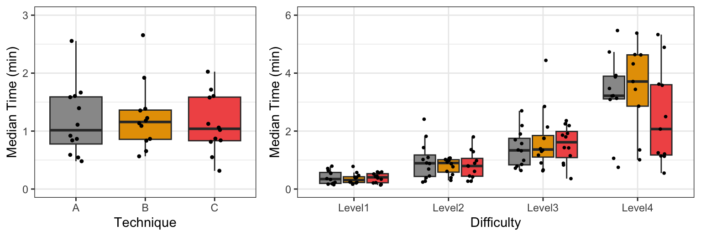
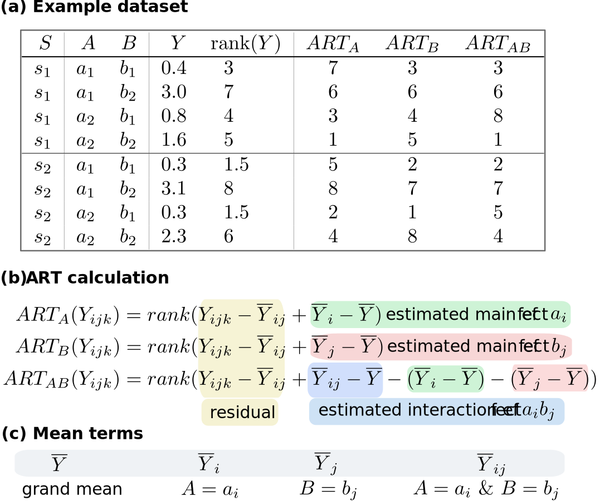
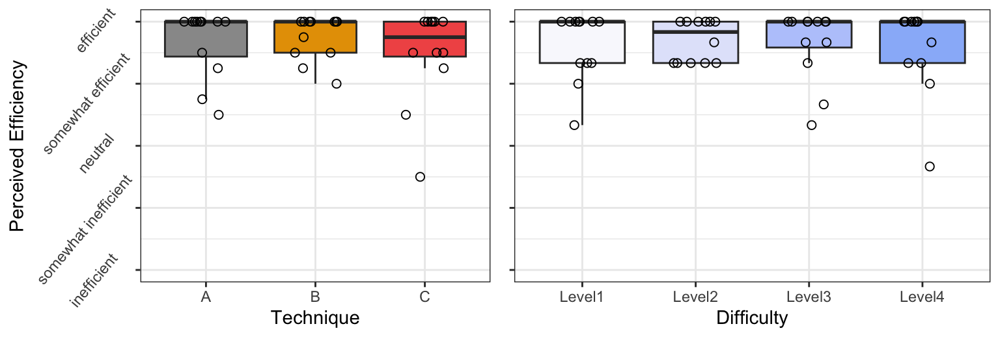
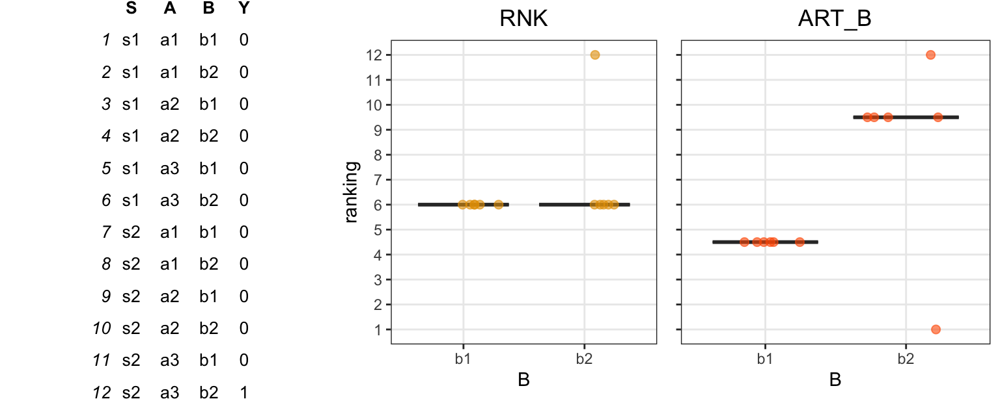

The illusory promise of the Aligned Rank Transform
A systematic study of rank transformations
Theophanis Tsandilas ![]()
Géry Casiez
Under Review
This paper is under review on the experimental track of the Journal of Visualization and Interaction. See the reviewing process.
1 Introduction
In Human-Computer Interaction (HCI) and various fields within the behavioral sciences, researchers often gather data through user studies. Such data are typically messy, have small sample sizes, and may violate common statistical assumptions, such as the normality assumption. To address these challenges, researchers commonly employ nonparametric tests, which require fewer assumptions about the data. However, while nonparametric tests for simple one-factorial designs are well-established, researchers face challenges in selecting appropriate methods when dealing with multifactorial designs that require testing for both main effects and interactions. The Aligned Rank Transform or ART (Higgins, Blair, and Tashtoush 1990; Salter and Fawcett 1993; Wobbrock et al. 2011) addresses this problem by bridging the gap between nonparametric tests and ANOVAs. Its popularity in HCI research has surged, facilitated in part by the ARTool toolkit (Wobbrock et al. 2011; Kay et al. 2021), which simplifies the use of the method.
Early Monte Carlo experiments in the 1990s (Salter and Fawcett 1993; Mansouri and Chang 1995) and more recent studies (Elkin et al. 2021) suggested that ART is a robust alternative to ANOVA when normality assumptions are violated. These results have contributed to ART’s reputation as a well-established method. However, other research (Lüpsen 2017; Lüpsen 2018) raised concerns about the robustness of the method, demonstrating that ART fails to control the Type I error rate in many scenarios, such as when data are ordinal or are drawn from skewed distributions. Unfortunately, these warnings have not received sufficient attention, and many authors still rely on Wobbrock et al.’s (2011) assertion that “The ART is for use in circumstances similar to the parametric ANOVA, except that the response variable may be continuous or ordinal, and is not required to be normally distributed.”
Our goal is to clarify the severity of these issues and understand the potential risks of the method. We present the outcomes of a series of Monte Carlo experiments, following a distinctive simulation methodology grounded in latent variable modeling. This approach enables us to simulate effects consistently across a broad spectrum of distributions, both discrete and continuous, and allows us to address scaling issues in interpreting interactions. To ensure the clarity of our findings and facilitate their reproducibility, we divide the experimental process into multiple smaller experiments, where each experiment focuses on a distinct variable (e.g., sample size, experimental design, variance ratio) or measure (Type I error rate, power, precision of effect size estimates).
Our findings corroborate Lüpsen’s alarming conclusions. We provide overwhelming evidence that ART confounds effects and raises Type I error rates at very high levels across a diverse array of non-normal distributions, including skewed, binomial, and ordinal distributions, as well as distributions with unequal variances. These issues persist for both main and interaction effects. Our results further show that simpler rank transformation methods outperform ART, while parametric ANOVA generally poses fewer risks than ART when distributions deviate from normal. Given these new insights, we conclude that ART is not a viable analysis method and advocate for its abandonment. We provide recommendations for alternative analysis methods, while we also raise warnings about the interpretation of interaction effects.
Illustrative example
We will begin with an illustrative example to demonstrate how the aligned rank transform can lead to an increase in false positives and a significant inflation of observed effects. This example will also serve as a brief introduction to the key concepts and methods employed throughout the paper.
Suppose an HCI researcher conducts an experiment to compare the performance of three user interface techniques (A, B, and C) that help users complete image editing tasks of four different difficulty levels. The experiment follows a fully balanced \(4 \times 3\) repeated-measures factorial design, where each participant (N = 12) performs 12 tasks in a unique order. The researcher measures the time that it takes participants to complete each task. The following table presents the experimental results:
Example dataset: Time (in minutes) spent by 12 participants for four difficulty levels and three user interface techniques. Scroll down to see the full results.
| Participant | Difficulty | Technique | Time |
|---|---|---|---|
| P01 | Level1 | A | 0.20 |
| P01 | Level1 | B | 0.17 |
| P01 | Level1 | C | 0.14 |
| P01 | Level2 | A | 0.45 |
| P01 | Level2 | B | 0.50 |
| P01 | Level2 | C | 0.27 |
| P01 | Level3 | A | 0.64 |
| P01 | Level3 | B | 0.63 |
| P01 | Level3 | C | 0.83 |
| P01 | Level4 | A | 0.75 |
| P01 | Level4 | B | 1.35 |
| P01 | Level4 | C | 1.25 |
| P02 | Level1 | A | 0.71 |
| P02 | Level1 | B | 0.47 |
| P02 | Level1 | C | 0.59 |
| P02 | Level2 | A | 1.82 |
| P02 | Level2 | B | 0.87 |
| P02 | Level2 | C | 1.29 |
| P02 | Level3 | A | 1.35 |
| P02 | Level3 | B | 4.44 |
| P02 | Level3 | C | 1.92 |
| P02 | Level4 | A | 3.22 |
| P02 | Level4 | B | 9.62 |
| P02 | Level4 | C | 5.33 |
| P03 | Level1 | A | 0.55 |
| P03 | Level1 | B | 0.21 |
| P03 | Level1 | C | 0.43 |
| P03 | Level2 | A | 0.88 |
| P03 | Level2 | B | 1.07 |
| P03 | Level2 | C | 1.36 |
| P03 | Level3 | A | 0.85 |
| P03 | Level3 | B | 0.66 |
| P03 | Level3 | C | 2.19 |
| P03 | Level4 | A | 3.21 |
| P03 | Level4 | B | 3.44 |
| P03 | Level4 | C | 2.07 |
| P04 | Level1 | A | 0.54 |
| P04 | Level1 | B | 0.41 |
| P04 | Level1 | C | 0.52 |
| P04 | Level2 | A | 1.02 |
| P04 | Level2 | B | 0.61 |
| P04 | Level2 | C | 0.80 |
| P04 | Level3 | A | 2.19 |
| P04 | Level3 | B | 1.75 |
| P04 | Level3 | C | 2.36 |
| P04 | Level4 | A | 9.82 |
| P04 | Level4 | B | 4.32 |
| P04 | Level4 | C | 3.58 |
| P05 | Level1 | A | 0.79 |
| P05 | Level1 | B | 0.78 |
| P05 | Level1 | C | 0.45 |
| P05 | Level2 | A | 2.41 |
| P05 | Level2 | B | 0.99 |
| P05 | Level2 | C | 1.80 |
| P05 | Level3 | A | 2.70 |
| P05 | Level3 | B | 2.85 |
| P05 | Level3 | C | 2.25 |
| P05 | Level4 | A | 3.13 |
| P05 | Level4 | B | 5.38 |
| P05 | Level4 | C | 6.24 |
| P06 | Level1 | A | 0.64 |
| P06 | Level1 | B | 0.23 |
| P06 | Level1 | C | 0.34 |
| P06 | Level2 | A | 0.90 |
| P06 | Level2 | B | 0.93 |
| P06 | Level2 | C | 0.45 |
| P06 | Level3 | A | 1.32 |
| P06 | Level3 | B | 1.34 |
| P06 | Level3 | C | 1.80 |
| P06 | Level4 | A | 5.47 |
| P06 | Level4 | B | 4.64 |
| P06 | Level4 | C | 2.50 |
| P07 | Level1 | A | 0.17 |
| P07 | Level1 | B | 0.17 |
| P07 | Level1 | C | 0.16 |
| P07 | Level2 | A | 0.24 |
| P07 | Level2 | B | 0.30 |
| P07 | Level2 | C | 0.27 |
| P07 | Level3 | A | 0.72 |
| P07 | Level3 | B | 1.30 |
| P07 | Level3 | C | 0.36 |
| P07 | Level4 | A | 1.06 |
| P07 | Level4 | B | 1.01 |
| P07 | Level4 | C | 0.55 |
| P08 | Level1 | A | 0.36 |
| P08 | Level1 | B | 0.38 |
| P08 | Level1 | C | 0.22 |
| P08 | Level2 | A | 0.69 |
| P08 | Level2 | B | 1.02 |
| P08 | Level2 | C | 0.89 |
| P08 | Level3 | A | 0.99 |
| P08 | Level3 | B | 1.75 |
| P08 | Level3 | C | 1.15 |
| P08 | Level4 | A | 3.87 |
| P08 | Level4 | B | 4.63 |
| P08 | Level4 | C | 4.89 |
| P09 | Level1 | A | 0.33 |
| P09 | Level1 | B | 0.24 |
| P09 | Level1 | C | 0.21 |
| P09 | Level2 | A | 0.39 |
| P09 | Level2 | B | 1.01 |
| P09 | Level2 | C | 0.42 |
| P09 | Level3 | A | 0.79 |
| P09 | Level3 | B | 1.17 |
| P09 | Level3 | C | 1.86 |
| P09 | Level4 | A | 3.47 |
| P09 | Level4 | B | 2.86 |
| P09 | Level4 | C | 1.21 |
| P10 | Level1 | A | 0.18 |
| P10 | Level1 | B | 0.24 |
| P10 | Level1 | C | 0.59 |
| P10 | Level2 | A | 0.27 |
| P10 | Level2 | B | 0.77 |
| P10 | Level2 | C | 0.61 |
| P10 | Level3 | A | 1.57 |
| P10 | Level3 | B | 0.90 |
| P10 | Level3 | C | 1.43 |
| P10 | Level4 | A | 4.73 |
| P10 | Level4 | B | 3.71 |
| P10 | Level4 | C | 1.13 |
| P11 | Level1 | A | 0.15 |
| P11 | Level1 | B | 0.57 |
| P11 | Level1 | C | 0.38 |
| P11 | Level2 | A | 1.43 |
| P11 | Level2 | B | 0.39 |
| P11 | Level2 | C | 0.79 |
| P11 | Level3 | A | 1.90 |
| P11 | Level3 | B | 2.14 |
| P11 | Level3 | C | 0.89 |
| P11 | Level4 | A | 3.92 |
| P11 | Level4 | B | 7.19 |
| P11 | Level4 | C | 3.62 |
| P12 | Level1 | A | 0.23 |
| P12 | Level1 | B | 0.41 |
| P12 | Level1 | C | 0.56 |
| P12 | Level2 | A | 1.09 |
| P12 | Level2 | B | 1.06 |
| P12 | Level2 | C | 0.98 |
| P12 | Level3 | A | 1.70 |
| P12 | Level3 | B | 1.39 |
| P12 | Level3 | C | 1.42 |
| P12 | Level4 | A | 3.09 |
| P12 | Level4 | B | 6.24 |
| P12 | Level4 | C | 1.14 |
The experiment is hypothetical but has similarities with real-world experiments, e.g., see the experiments of Fruchard et al. (2023). Time performances have been randomly sampled from a population in which: (1) Difficulty has a large main effect; (2) Technique has no main effect; and (3) there is no interaction effect between the two factors. To generate time values, we drew samples from a log-normal distribution. The log-normal distribution is often a good fit for real-world measurements that are bounded by zero and have low means but large variance (Limpert, Stahel, and Abbt 2001). Task-completion times are good examples of such measurements (Sauro and Lewis 2010).
Figure 1 presents two boxplots that visually summarize the main effects observed through the experiment. We plot medians to account for the fact that distributions are skewed. We observe that differences in the overall time performance of the three techniques are not visually clear, although the overall median time is somewhat higher for Technique B. In contrast, time performance clearly deteriorates as task difficulty increases. We also observe that for the most difficult tasks (Level 4), the median time for Technique C is lower than the median time for Techniques A and B, so we may suspect that Difficulty interacts with Technique. However, since the spread of observed values is extremely large and the number of data points is small, such differences could result from random noise.
We opt for a multiverse analysis (Dragicevic et al. 2019) to analyze the data, where we conduct a repeated-measures ANOVA with four different data-transformation methods:
Log transformation (LOG). Data are transformed with the logarithmic function. For our data, this is the most appropriate method as we drew samples from a log-normal distribution.
Aligned rank transformation (ART). Data are transformed and analyzed with the ARTool (Wobbrock et al. 2011; Elkin et al. 2021).
Pure rank transformation (RNK). Data are transformed with the original rank transformation (Conover and Iman 1981), which does not perform any data alignment.
Inverse normal transformation (INT). The data are transformed by using their normal scores. This rank-based method is simple to implement and has been commonly used in some disciplines. However, it has also received criticism (Beasley, Erickson, and Allison 2009).
For comparison, we also report the results of the regular parametric ANOVA with no transformation (PAR). For each ANOVA analysis, we use a linear mixed-effects model, treating the participant identifier as a random effect. To simplify our analysis and like Elkin et al. (2021), we consider random intercepts but no random slopes. For example, we use the following R code to create the model for the log-transformed response:
m.log <- lmer(log(Time) ~ Difficulty*Technique + (1|Participant), data = df)The table below presents the p-values for the main effects of the two factors and their interaction:
| PAR | LOG | ART | RNK | INT | |
|---|---|---|---|---|---|
| Difficulty | \(1.8 \times 10^{-26}\) | \(8.1 \times 10^{-47}\) | \(9.0 \times 10^{-43}\) | \(4.3 \times 10^{-46}\) | \(4.4 \times 10^{-44}\) |
| Technique | \(.10\) | \(.18\) | \(.00061\) | \(.38\) | \(.17\) |
| Difficulty \(\times\) Technique | \(.056\) | \(.10\) | \(.0017\) | \(.24\) | \(.23\) |
The disparity in findings between ART and the three alternative transformation methods is striking. ART suggests that all three effects are statistically significant. What adds to the intrigue is the fact that ART’s p-values for Technique and its interaction with Difficulty are orders of magnitude lower than the p-values obtained from all other methods. We will observe similar discrepancies if we conduct contrast tests with the ART procedure (Elkin et al. 2021), though we leave this as an exercise for the reader.
We also examine effect size measures, which are commonly reported in scientific papers. The table below presents results for partial \(\eta^2\), which describes the ratio of variance explained by a variable or an interaction:
| PAR | LOG | ART | RNK | INT | |
|---|---|---|---|---|---|
| Difficulty | \(.64\ [.55, 1.0]\) | \(.83\ [.79, 1.0]\) | \(.80\ [.76, 1.0]\) | \(.83\ [.79, 1.0]\) | \(.81\ [.77, 1.0]\) |
| Technique | \(.04\ [.00, 1.0]\) | \(.03\ [.00, 1.0]\) | \(.11\ [.03, 1.0]\) | \(.02\ [.00, 1.0]\) | \(.03\ [.00, 1.0]\) |
| Difficulty \(\times\) Technique | \(.10\ [.00, 1.0]\) | \(.08\ [.00, 1.0]\) | \(.16\ [.04, 1.0]\) | \(.06\ [.00, 1.0]\) | \(.06\ [.00, 1.0]\) |
We observe that ART exaggerates both the effect of Technique and its interaction with Difficulty.
Overview
The above example does not capture a rare phenomenon. We will show that ART’s error inflation is systematic for a range of distributions that deviate from normality, both continuous and discrete. We will explain how the problem emerges. We will also see that ART often performs worse than simpler methods that ART is widely considered to repair or improve, such as the pure rank transformation or no transformation at all.
The paper is structured as follows. Section 2 introduces nonparametric tests and rank transformations, and explains how ART is constructed. It also provides a summary of previous experimental results regarding the robustness of ART and other related rank-based procedures, along with a survey of recent studies using ART. Section 3 investigates issues regarding effect interpretation and introduce our distribution simulation approach. Section 4 outlines our experimental methodology, while Section 5 presents our findings. Section 6 revisits results of previous studies employing ART and illustrates how its application can lead to erroneous conclusions. Section 7 offers recommendations for researchers. Finally, Section 8 concludes the paper.
In addition to the main sections of the paper, we provide an appendix with results from additional Monte Carlo experiments.
2 Background
In this section, we provide background on the history, scope, construction, and use of rank transformation methods, with a particular focus on ART. Additionally, we summarize the results of previous evaluation studies and position our own work within this context.
Nonparametric statistical tests
A common assumption of ANOVAs and linear regression is that the distribution of residuals is normal. More technically, the normality assumption concerns the sampling distribution of the mean. Therefore, when sample sizes are sufficiently large, these methods are robust to departures from the normality assumption because the sampling distribution of the mean is asymptotically normal, regardless of the shape of the population distributions (Central Limit Theorem). However, their accuracy drops if samples are relatively small and populations markedly deviate from normal.
The goal of nonparametric procedures is to address this problem by making fewer or no assumptions about the underlying distributions. The original idea of replacing the data values by their ranks belongs to Spearman (1904). The key advantage of ranks is that they preserve the monotonic relationship of values while also allowing the derivation of an exact probability distribution. This probability distribution can then be used for statistical inference, such as calculating a p-value. The idea of using ranks was adopted by other researchers, leading to the development of various nonparametric tests commonly used today. Representative examples include the Mann-Whitney U test (Mann and Whitney 1947) and the Kruskal–Wallis test (Kruskal and Wallis 1952) for independent samples, and the Wilcoxon sign-rank test (Wilcoxon 1945) and the Friedman test (Friedman 1940) for paired samples and repeated measures.
Rank transformations
Unfortunately, the scope of nonparametric tests is limited, as they only support simple experimental designs with a single independent variable. Rank transformations aim to address this limitation by bridging the gap between nonparametric statistics and ANOVA.
The rank transform. Conover (2012) provides a comprehensive introduction to the simple rank transform, which consists of sorting the raw observations and replacing them by their ranks. In case of ties, tied observations are assigned fractional ranks equal to their average order position in the ascending sequence of values. For example, the two \(0.3\) instances of the \(Y\) responses in Figure 2 (a), which are the lowest values in the dataset, receive a rank of \(1.5\) (see \(rank(Y)\)), while the next value (a \(0.4\)) in the sequence receives a rank of \(3\).
Conover and Iman (1981) showed that for one-factor designs, using ANOVAs on these ranks produces tests that are asymptotically equivalent or good replacements of traditional nonparametric tests (see Section 3). However, a series of studies in the 80s raised caution flags on the use of the method, showing that it may confound main and interaction effects in two-factor and three-factor experimental designs. For an extensive review of these studies, we refer readers to Sawilowsky (1990).
The aligned rank transform. Given such negative results, many researchers turned to aligned (or adjusted) rank transformations. Sawilowsky (1990) discusses several variations of aligned rank-based transformations (ART) and tests, while Higgins, Blair, and Tashtoush (1990) detail the ART method that we evaluate in this paper for two-way designs. Wobbrock et al. (2011) generalize it to more than two factors, while 10 years later, Elkin et al. (2021) show how to apply it to multifactor contrast tests. Figure 2 explains the general method for a design with two factors, \(A\) and \(B\).

The key intuition behind the transform is that responses are ranked after aligning them, such that effects of interest are separated from other effects. This means that for each effect of interest, either main or interaction, we produce a separate ranking. This is clearly demonstrated through the example dataset in Figure 2 (a), where each aligned ranking (\(ART_A\), \(ART_B\), and \(ART_{AB}\)) is for testing a different effect (\(A\), \(B\), and \(A \times B\), respectively).
Notice that even for this very small dataset (\(n = 2\)), these three rankings are distinct from each other, as well as very different from the ranking of the simple rank transform. Interestingly, equal responses (the two \(0.3\) in our example dataset) may be assigned to very different ranks, while very different responses (such as \(0.3\) and \(3.0\) in our dataset) can be assigned to the same rank. Furthermore, differences between the two groups \(a_1\) and \(a_2\) within factor \(A\) are significantly exaggerated by ART (see \(ART_A\) ranks). We will later see that this behavior can lead to unstable results and conclusions, and is the source of the main problems of the method. For example, if we run a repeated-measures ANOVA on these ranks, we obtain a p-value \(= .044\) for the effect of \(A\). For comparison, if we run repeated-measures ANOVA on the ranks of simple rank transformation, we obtain a p-value \(= .46\), while if we use a log-transformation that is more appropriate for these data, we obtain a p-value \(= .85\).
Figure 2 (b-c) details the calculation of the transformation, where we highlight the following terms: (i) residuals (in yellow) that represent the unexplained error (due to individual differences in our example); (ii) main effects (in green and pink) estimated from the observed means of the individual levels of the two factors; and (iii) interaction effect estimates (in blue). Observe that the estimates of the two main effects are subtracted from the interaction term. The objective of this approach is to eliminate the influence of main effects when estimating interaction effects.
This is not the only alignment technique found in the research literature. Sawilowsky (1990) suggests that at least for balanced designs, interactions could be removed when aligning main effects, in the same way main effects are removed when aligning interactions. This approach is also taken by Leys and Schumann (2010), who derived a common ranking for both main effects after subtracting the interaction term. We do not test these alternative alignment methods in this paper since to the best of our knowledge, they are not commonly used.
The inverse normal transform. A third transformation method that we evaluate is the rank-based inverse normal transformation (INT). INT is more than 70 years old (Waerden 1952) and appears in several variations (Beasley, Erickson, and Allison 2009; Solomon and Sawilowsky 2009). Its general formulation is as follows:
\[ INT(Y) = \Phi^{-1}(\frac{rank(Y) - c}{N - 2c + 1}) \tag{1}\]
where \(N\) is the total number of observations and \(\Phi^{-1}\) is the standard normal quantile function, which transforms a uniform distribution of ranks into a normal distribution. Different authors have used a different parameter \(c\). In our experiments, we use the Rankit formulation (Bliss, Greenwood, and White 1956), where \(c = 0.5\), since past simulation studies (Solomon and Sawilowsky 2009) have shown that it is more accurate than alternative formulations. However, as Beasley, Erickson, and Allison (2009) report, the choice of \(c\) is of minor importance. For our experiments, we implement the INT method in R as follows:
INT <- function(x){
qnorm((rank(x) - 0.5)/length(x))
}Figure 2 (a) shows how this function transforms the responses for our example dataset.
Other non-parametric rank-based methods. There are other rank-based statistical tests that deal with interactions, the ANOVA-type statistic (ATS) (Brunner and Puri 2001) being the most representative one. Kaptein, Nass, and Markopoulos (2010) introduced this method to the HCI community, advocating its application in the analysis of Likert-type data as a viable alternative to parametric ANOVA. In addition to ATS, Lüpsen (2017; 2018; 2023) investigated several other multifactorial nonparametric methods. In particular, the author evaluated the hybrid ART+INT technique proposed by Mansouri and Chang (1995), which applies INT on the ranks of ART. He also tested multifactorial generalizations of the van der Waerden test (Waerden 1952) and the Kruskal-Wallis and Friedman tests (Kruskal and Wallis 1952; Friedman 1940). The former is based on INT, but instead of using F-tests on the transformed values as part of ANOVA, it computes \(\chi^2\) ratios over sums of squares. These two methods are not widely available. Their implementation in R can be downloaded from Lüpsen’s web page (Lüpsen 2021).
Experimental evaluations
Previous studies have assessed ART and related procedures through various Monte Carlo experiments, yielding conflicting results and conclusions.
Results in support of ART. The outcomes from numerous experiments conducted in the 80s and 90s suggested that ART was robust in testing interaction effects. Noteworthy instances include studies, such as those by Salter and Fawcett (1993), which compared the method to parametric ANOVA. The authors found that ART remains robust even in the presence of outliers or specific non-normal distributions, such as the logistic, exponential, and double exponential distributions. Their findings indicated only a marginal increase in error rates (ranging from 6.0% to 6.3% instead of the expected 5%) when applied to the exponential distribution. Furthermore, ART demonstrated superior statistical power compared to parametric ANOVA. Mansouri and Chang (1995) evaluated ART under a different set of non-normal distributions (normal, uniform, log-normal, exponential, double exponential, and Cauchy) in the presence of increasing main effects. Except for the Cauchy distribution, ART maintained Type I error rates close to nominal levels across all scenarios, irrespective of the magnitude of main effects. In contrast, the error rates of the rank transformation reached very high levels (up to \(100\%\)) as the magnitude of main effects increased, even under the normal distribution. ART only failed under the Cauchy distribution, which is well-known to be pathological.
More recently, Elkin et al. (2021) compared ART to parametric t-tests for testing multifactor contrasts under six distributions: normal, log-normal, exponential, double exponential, Cauchy, and Student’s t-distribution (\(\nu=3\)). Their results confirmed that ART keeps Type I error rates close to nominal levels across all distributions, except for the Cauchy distribution. In addition, they found that ART exhibits a higher power than the t-test. We emphasize, however, that the experimental methodology of Elkin et al. (2021) did not allow for detecting the influence of a factor’s main effect on the effect of a different factor or their interaction.
While most evaluation studies have focused on continuous distributions, Payton et al. (2006) have also studied how various transformations (rank, ART, log-transform, and squared-root transform) perform under the Poisson distribution, focusing again on interaction effects when main effects were present. The authors found that ART and parametric ANOVA (no transformation) performed best, keeping Type I error rates close to nominal levels. All other transformations inflated error rates.
Warnings. While the above results indicate that ART is a robust method, other studies have identified some serious issues. The second author of this paper has observed that, in certain cases, ART seems to detect spurious effects that alternative methods fail to identify (Casiez 2022). Such informal observations, conducted with both simulated and real datasets, motivated us to delve deeper into the existing literature.
Carletti and Claustriaux (2005) report that “aligned rank transform methods are more affected by unequal variances than analysis of variance especially when sample sizes are large.” Years later, Lüpsen (2018) conducted a series of Monte Carlo experiments, comparing a range of rank-based transformations, including the rank transformation, ART, INT, a combination of ART and INT (ART+INT), and ATS. His experiments focused on a \(2 \times 4\) balanced between-subjects design and a \(4 \times 5\) severely unbalanced design and tested normal, uniform, discrete uniform (integer responses from 1 to 5), log-normal, and exponential distributions, with equal or unequal variances. Furthermore, they tested both interaction and main effects when the magnitude of other effects increased. The results revealed that ART inflates error rates beyond acceptable levels in several configurations: right-skewed distributions (log-normal and exponential), discrete responses, unequal variances, and unbalanced designs. Lüpsen (2018) also found that using INT in combination with ART (ART+INT) is preferable to the pure ART technique. However, as the method still severely inflated error rates in many settings, Lüpsen (2018) concluded that both ART and ART+INT are “not recommendable.”
Another interesting finding of Lüpsen (2018) was that the simple rank transformation “appeared not as bad as it is often described” (Lüpsen 2018), outperforming ART in certain configurations, such as discrete and skewed distributions, or unequal variances. These results are in full contradiction with the findings of Mansouri and Chang (1995).
The same author conducted an additional series of experiments (Lüpsen 2017), focusing on two discrete distributions (uniform and exponential) with a varying number of discrete levels: 2, 4, and 7 levels with integer values for the uniform distribution, and 5, 10, and 18 levels with integer values for the exponential distribution. Again, the Type I error rates of both ART and ART+INT reached very high levels, but error rates were especially pronounced when the number of discrete levels became small and the sample size increased. The author provides a detailed analysis of why ART fails in these cases, summarized as follows:
“There is an explanation for the increase of the type I error rate when the number of distinct values gets smaller or the sample size larger: due to the subtraction of the other effects — a linear combination of the means — from the observed values even tiny differences between the means lead to large differences in the ranking” (Lüpsen 2017).
Given these results, the author’s conclusion was the following:
“the ART as well as the ART+INT cannot be applied to Likert and similar metric or ordinal scaled variables, e.g. frequencies like the number of children in a family or the number of goals, or ordinal scales with ranges from 1 to 5” (Lüpsen 2017).
Results on other rank-based methods. We are also interested in understanding how ART compares with INT, which is frequently used in some research domains, such as genetics research (Beasley, Erickson, and Allison 2009). Beasley, Erickson, and Allison (2009) conducted an extensive evaluation of the method and reached the conclusion that “INTs do not necessarily maintain proper control over Type 1 error rates relative to the use of untransformed data unless they are coupled with permutation testing.” Lüpsen (2018) included INT in his evaluation and found that in most cases, it maintained better control of Type I error rates compared to ART and the pure rank transformation, while also presenting a higher statistical power. However, he also identified several cases where INT failed to sufficiently control for Type I errors, such as design configurations with unequal variances in unbalanced designs or skewed distributions, and when testing interactions in the presence of non-null main effects.
In addition to INT, Lüpsen (2018) evaluated the ATS method but found it to suffer from low power while presenting similar challenges as the rank transformation with regard to Type I error rates. Amongst all evaluated methods, the author identified the generalized van der Waerden test as the method that provided the best overall control of Type I error rates. More recently, Lüpsen (2023) conducted a new series of experiments testing rank-based nonparametric methods on split-plot designs with two factors. While the author reported on various tradeoffs of the methods, he concluded that overall, the generalized van der Waerden test and the generalized Kruskal-Wallis and Friedman tests were the best performing methods.
The use of ART in experimental research
To get a sense of how frequently ART is used in experimental research, we examined the citations of ARTool (Wobbrock et al. 2011) indexed by Google Scholar. As shown in Figure 3), the rate of citations to the original CHI 2011 paper introducing the method to the HCI community is steadily increasing, with over 400 citations in 2023 alone.

Figure 4 presents the most frequently citing venues for 2023. We observe that the HCI, Augmented Reality (AR), and Virtual Reality (VR) venues dominate these citations. However, we found that ARTool is used in other scientific disciplines. For example, among the papers published in 2023, we counted nine Nature Scientific Reports and a total of 25 articles appearing in journals with the words “neuro” or “brain” in their title, including the Journal of Neuropsychology (three citations), the Journal of Neuroscience (two citations), the Journal of Cognitive Neuroscience (two citations), Neuropsychologia (two citations), Nature Neuroscience, Neuropharmacology, Brain, and NeuroImage.

To gain insights into the prevalent experimental designs using ART, we examined a subset of citing papers comprising the 39 most recent English publications as of November 2023. Among these, 25 report using a within-participants design, three papers report using a between-participants design, while 11 papers report using a mixed design that involved both between- and within-participants factors. The number of factors ranges from one to five, with two factors representing approximately 64% of the experimental designs. Participant counts in these studies vary between 12 and 468, with a median of 24 participants. Within-cell sample sizes (n) range from 8 to 48, with a median of 20.
Furthermore, we explored the types of data analyzed using ART. Among the 39 papers, 21 use ART for analyzing ordinal data, often in conjunction with other data types. Ordinal data include responses to Likert scales or other scales of subjective assessment, such as the NASA Task Load Index (NASA TXL) (Hart and Staveland 1988). Furthermore, several authors apply ART to individual ordinal items, including Likert items with five levels (two papers), seven levels (seven papers), and 11 levels (three papers). Other types of data for which the method is used include task-completion or response times, counts, and measures of accuracy, such as target hit rates or recall scores. A common rationale for employing ART for such measures is the detection of departures from normality assumptions, often identified through tests like the Shapiro-Wilk test. Interestingly, several authors use ART only for ratio data, opting for nonparametric tests such as the Friedman test when analyzing ordinal data.
Out of the 39 papers examined, 38 identify at least one statistically significant main effect using ART. Additionally, 30 papers conduct tests for interactions, with 24 of them reporting at least one statistically significant interaction effect. Only five papers have publicly available data. We revisit the results of three of these papers in Section 6.
Positioning
We observe that ART is frequently used for the analysis of experimental results. Interestingly, the cautions raised by Lüpsen (2017; 2018) have been widely overlooked, and ART is commonly applied to datasets, including Likert data with five or seven levels, where the method has been identified as particularly problematic. Given the contradictory findings in the existing literature, researchers grapple with significant dilemmas regarding which past recommendations to rely on.
Our goal is to verify Lüpsen’s findings by employing an alternative set of experimental configurations and a distinctly different methodology. In particular, we adopt a latent variable modeling approach that establishes a unified framework for data generation across all distributions. This approach allows us to demonstrate the shortcomings of rank-based approaches in effectively addressing interactions through the lens of removable interactions (Loftus 1978). Moreover, it facilitates the assessment of the methods through more suitable generation procedures for ordinal data, as suggested by Liddell and Kruschke (2018).
With a focus on clarity, we chose to exclusively examine the three rank-based transformations presented earlier: the pure rank transformation (RNK), ART, and INT. While we do not elaborate on the performance of ATS in the main paper, additional experimental results are available in the appendix. These findings indicate that its performance is comparable to the rank transformation but seems to be inferior to the simpler and more versatile INT. The appendix features additional results regarding the performance of the generalized van der Waerden test, as well as the generalized Kruskal-Wallis and Friedman tests. Our findings show that, at least in balanced designs, these methods suffer from low power issues without demonstrating any clear benefits compared to INT.
Finally, we chose to limit our investigation to balanced experimental designs. The rationale behind this decision is that we have not encountered any prior claims about ART’s suitability for unbalanced data, and the ARTool (Kay et al. 2021) issues a warning in such situations. However, the appendix presents additional results on experimental designs with missing data, which confirm that in such situations, ART’s accuracy may deteriorate further.
3 Interpreting effects
The ART procedure was proposed as an alternative to the rank transformation (Conover and Iman 1981) for testing interactions. As Higgins, Blair, and Tashtoush (1990) explained, the rank transformation is non-linear and, as a result, it changes the structure of interactions. Therefore, “interaction may exist in the transformed data but not in the original data, or vice versa” (Higgins, Blair, and Tashtoush 1990). Figure 5 demonstrates the problem. In this example, the data have been sampled from perfectly normal distributions with equal variances. We observe that while no interaction effect appears in the original data (lines are parallel), the rank transformation causes the trends to slightly change. In particular, differences are more pronounced for the middle points of the three-level factor (“medium difficulty”). This problem emerges when the main effect is strong on both factors.
ART aims to correct this problem. However, non-linear transformations come into place in various ways in experimental designs (Loftus 1978; Wagenmakers et al. 2012). They can deform distributions, making the interpretation of observed effects especially challenging. Before presenting our experimental method, we discuss these problems and explain how our approach takes them into consideration.
What is the null hypothesis of interest?
To compare different statistical methods, we first need to assess whether these methods are comparable. If two methods are not designed to test the same null hypothesis, then making direct comparisons between them could be misleading. Let us elucidate this problem.
ANOVA and nonparametric tests. The traditional ANOVA is used to test differences between two or more means. However, nonparametric tests often target other population parameters. For example, the Wilcoxon sign-rank test is commonly described as a test of medians for paired samples (McDonald 2014) and is used when population means are not of interest, e.g., when population distributions are skewed. The Mann-Whitney U and the Kruskal–Wallis tests are used, instead, to assess whether two or more independent samples come from the same population, or more technically, whether the mean ranks of the groups are the same. They can be only interpreted as tests of medians under the strict assumption that the population distributions of all groups have identical shapes and scales (George W. Divine and Juarez-Colunga 2018).
Rank transformations. Interpreting the null hypothesis of interest of a rank transformation is more challenging. Conover and Iman (1981) show that the simple rank transformation procedure RNK is equivalent to the Mann-Whitney U and Kruskal–Wallis tests for independent samples. For paired samples, however, it results in a new test, which is different from the Wilcoxon sign-rank test and the Friedman test. Defining the null hypothesis of interest of ART is even more challenging because of the hybrid nature of the method. In particular, while ART is a rank-based transformation procedure, it aligns data with respect to means, where alignment is performed independently for each group.
Dealing with the interpretation of main effects. To partly avoid these interpretation issues, we focus on effects that apply monotonic transformations to population distributions. This also ensures a monotonic relationship between different measures of central tendency such as medians and means (with the exception of the Cauchy distribution, where the mean is undefined). In other words, if a treatment increases the population mean, it will also increase the population median. We present an example in Figure 6. The figure shows two population distributions corresponding to the two intermediate levels of difficulty of our illustrative example (see Figure 1). We observe that the increased difficulty of the task translates both the population mean and the median to the right. In this case, we expect a statistical test to reject the null hypothesis, no matter whether it tests the population mean, the median, or the overall distribution shape.
Nevertheless, the increased difficulty of the task does not simply translate the distribution to the right. The shape and scale of the distribution also change — the variance increases, and the mean and median do not increase by the same amount. This poses a problem for ART’s alignment procedure because the more extreme values of a random sample that appear near the further right of the wider distribution (depicted in green in Figure 6) will have a significant impact on the calculation of the within-cell mean. This will lead to the exaggeration of all ranks within this cell.
Unfortunately, an additional issue arises regarding the interpretation of interactions, which we discus in depth below.
Interaction interpretation problems
Let us take a different dataset from a fictional experiment (within-participants design with \(n = 24\)) that evaluates the performance of two techniques (Tech A and Tech B) under two task difficulty levels (easy vs. hard). The experiment, for example, could test a mobile typing task, where the levels of difficulty correspond to texts of different lengths (short vs. long) under two typing techniques (with vs. without auto-completion). We assume that the researchers measure two dependent variables: task-completion time and perceived performance, which is measured through a five-level ordinal scale (from “very quick” to “very slow”). In this example, the main effects of task difficulty and technique are large. What is less clear, however, is whether there is an interaction between the two factors.
The problem of different scales. Figure 7 visualizes the means for each combination of the levels of the factors and highlights the possible interactions. Let us first concentrate on the first two plots that present results for the time measure. The trends in the left plot indicate an interaction effect, since the two lines seem to diverge as the task difficulty increases.
But how meaningful is this interpretation of interaction? Time measurements are often taken from distributions of different scales, that is, large effects are harder to observe in quick tasks than in slow ones. For example, performance differences in sprint races are in the range of milli- or centiseconds, while differences in long-distance races can be in the range of several seconds or minutes. So if we compare the time performance of any two groups of people (e.g., 14- vs. 12-year-old children), we will always find that absolute differences grow as race distance increases. However, such trends do not necessarily reveal any real interactions, because they are simply due to observations at different time scales. This issue is not specific to running races. Wagenmakers and Brown (2007) show that the standard deviation of response times increases linearly with their mean. This relationship is depicted in Figure 1 and Figure 6, where the mean and the spread of the time distributions grow together as task difficulty increases.
In our example in Figure 7, each task (typing a piece of text) is a sequence of elementary tasks (typing a word). We thus expect both means and standard deviations to grow as a function of the number of words in the text. In this case, meaningful interaction effects (e.g., Tech B suffers from more intense fatigue effects in longer texts) will be manifested as growing time ratios (i.e., as proportional differences) — not as growing absolute time differences. An easy way to visually assess the presence of such interactions is to show time on a logarithmic scale, as shown in Figure 7 (middle). Notice that the lines in the plot are now almost parallel, suggesting no interaction effect.
Removable interactions. The concept of removable interactions, that is, interactions that disappear after applying a monotonic non-linear transformation, was introduced by Loftus (1978). Over three decades later, Wagenmakers et al. (2012) revisited this work and found that psychology researchers are largely unaware of the concept, drawing incorrect conclusions about psychological effects on the basis of meaningless interactions. This issue also extends to data collected from questionnaires. The right plot in Figure 7 shows results for perceived performance. Again, the line trends suggest an interaction effect. Unfortunately, the scale is ordinal, which means that distances between the five levels of the scale may not be perceived as equal by people. Furthermore, the scale is bounded, so the reason that the two lines are not parallel might be simply due to the absence of additional levels beyond the extreme “very slow” ranking. Concluding that there is a meaningful interaction here could be incorrect. Liddell and Kruschke (2018) extensively discuss how ordinal scales deform interactions.
Formal testing. We now formally test the above interactions by using ANOVA with different transformation methods. Below, we present the p-value returned by each method for task-completion time:
| PAR | LOG | ART | RNK | INT |
|---|---|---|---|---|
| \(.023\) | \(.67\) | \(.00073\) | \(.66\) | \(.67\) |
We observe that RNK and INT lead to p-values very close to the p-value of LOG, which suggests a similar interpretation of interaction effects. In contrast, ART returns a very low p-value (lower than the p-value of the regular ANOVA), showing that the method is extremely sensitive to scale effects.
We also test the interaction effect on the ordinal dependent variable:
| PAR | ART | RNK | INT | ATS |
|---|---|---|---|---|
| \(.0020\) | \(.00075\) | \(.0067\) | \(.0037\) | \(.0081\) |
Notice that we omit the log-transformation method (LOG), as it is not relevant here. We conduct instead an analysis with the nonparametric ATS method (Brunner and Puri 2001) as implemented in the R package nparLD (Noguchi et al. 2012). All p-values are low, suggesting that an interaction effect exists. However, if we conduct a more appropriate analysis using an ordered probit model (Bürkner and Vuorre 2019; Christensen 2023), we will reach the conclusion that there is no supportive evidence for such an effect (check our analysis in the supplementary material). We return to these models in later sections. An important observation here is that nonparametric procedures are not the answer to such problems.
Approach
Our analysis shows that inference errors are not simply due to the lack of robustness of a statistical procedure. In the case of interaction effects, errors will also emerge when the procedure makes inference on the wrong scale. As Wagenmakers et al. (2012) explain, “the dependent variable reflects merely the output of a latent psychological process”, and unfortunately, “in most experimental paradigms the exact relationship between unobserved process and observed behavior is unknown …”
Ideally, a statistical procedure should lead to conclusions that capture the true effects on the latent variable of interest. But as we discussed above, this might not be the case for the rank transformation methods that we study. For example, all four methods (PAR, RNK, ART, and INT) suggest that task difficulty interacts with use of technique on perceived performance because they disregard the fact that the observed data are simply projections on a discrete ordinal scale. Our goal is to understand how ART and the other methods deal with such problems.
Latent variables. We assume that there is a latent variable \(Y\) of interest that is different from the variable we observe. For example, a latent variable may represent the performance potential of a population of people, their working memory capacity, their perceived utility of a new technology, or their quality of life. For convenience, we assume that the latent variable is continuous and normally distributed. This assumption is common in latent variable modeling, e.g., in diffusion-decision models that predict response time and error in two-choice decision tasks (Ratcliff and McKoon 2008), and ordinal models (Liddell and Kruschke 2018).
Observed variables. Then, all dependent variables \(Y'\) that we observe are derived from this latent variable through a monotonic transformation, thus \(Y' = \mathcal{T}(Y)\), where \(\mathcal{T}(y_1) \le \mathcal{T}(y_2)\) if and only if \(y_1 \le y_2\). A transformation for example occurs when study participants perform a selection task or repond to a Likert-scale item through a questionnaire. Figure 8 shows how we transform normal distributions to log-normal, binomial, and ordinal scales.

To transform the latent variable to a ratio scale (e.g., a log-normal and binomial scale), we adopt the distribution conversion approach of faux v1.2.1 (DeBruine 2023), an R package for experimental simulations. We first derive the cumulative density distribution of the latent variable. We then use the inverse quantile function of the target distribution to derive the observed variable. For example, in Figure 8 (left), where we transform the latent variable to a log-normal scale with parameters \(\mu = 0\) and \(\sigma = 1\), we use the following R function:
norm2lnorm <- function(x, meanlog = 0, sdlog = 1, mu = mean(x), sd = sd(x), ...) {
p <- pnorm(x, mu, sd)
qlnorm(p, meanlog, sdlog, ...)
}For the binomial scale of Figure 8 (left), we use instead the inverse quantile function of the binomial distribution qbinom(p,size,prob) with parameters size = 10 and prob = .1, which respectively represent the number of Bernoulli trials and their success probability.
To transform the latent variable to an ordinal scale, we implement an ordered-probit model, as explained by Liddell and Kruschke (2018). According to this model, we discretize the latent variable with thresholds that determine the ordinal levels of interest. For our example in Figure 8 (right), we use as threshold the values \((-2.5, -1, 0, 2.5)\), defining an ordinal scale of five levels. Observe that these thresholds are not equidistant.
Interpreting effects. Our approach allows us to simulate main and interaction effects on the latent variable \(Y\) and observe them on the transformed variable \(Y' = \mathcal{T}(Y)\). As discussed earlier, how to infer main effects is straightforward since we only study monotonic transformations here. Specifically, if we observe a main effect on the observed variable \(Y'\), we can also conclude that there is a main effect on the latent variable \(Y\). Notice, however, that if the observed variable is bounded or takes only discrete values, a main effect on \(Y\) may not be observable.
The interpretation of interactions is more challenging. Depending on how the statistical procedure we use deals with different scales, observations of interactions among two or more factors on the transformed variable \(Y'\) may lead to incorrect conclusions about the presence of interactions on the latent space of \(Y\). Such errors emerge when the main effect of all interacting factors on the latent (or observed) variable is non-zero. In our analysis, we count them as statistical inference errors (Type I and II errors). Nevertheless, we try to distinguish them from typical inference errors, for which interaction interpretation issues do not come into place.
4 Experimental method
We can now detail our experimental method. We evaluate the standard parametric approach (PAR) and the three rank-transformation methods (RNK, INT, and ART) that we introduced earlier. We conduct a series of Monte Carlo experiments that assess their performance under a variety of experimental configurations:
We evaluate ratio and ordinal data. For ratio data, we examine four representative continuous distributions (normal, log-normal, exponential, and Cauchy distribution) and two discrete distributions (Poisson and binomial distribution). For ordinal data, we examine distributions for 5-level, 7-level, and 11-level Likert item responses.
We present results for five experimental designs. To simplify our presentation, we start with a 4 \(\times\) 3 repeated-measures factorial design. We then show how our conclusions generalize to four additional designs: (i) a 2 \(\times\) 3 between-subjects design; (ii) a 2 \(\times\) 4 mixed design, with a between-subjects factor and a repeated-measures factor; (iii) a 2 \(\times\) 2 \(\times\) 2 repeated-measures design, and (iv) a 3 \(\times\) 3 \(\times\) 3 repeated-measures design.
We evaluate three sample sizes, \(n=10\), \(n=20\), and \(n=30\), where \(n\) represents the cell size in an experimental design. For within-subjects designs where all factors are treated as repeated measures, \(n\) coincides with the number \(N\) of subjects (or commonly human participants in HCI research). In contrast, for a 2 \(\times\) 3 between-subjects design, if the cell size is \(n = 20\), then the number of subjects is \(N = 120\).
We test the robustness of the methods under unequal variances.
In addition to Type I error rates, we compare the statistical power of the methods and also evaluate the quality of their effect size estimates.
We assess the above measures for both main and interaction effects and examine how growing effects on one or two factors affect the Type I error rate on other factors and their interactions.
Previous evaluations of rank transformation methods (Beasley, Erickson, and Allison 2009; Lüpsen 2018) have also tested unbalanced designs, where the cell size is not constant across all levels of a factor. When combined with unequal variances, unbalanced designs are often problematic for both parametric procedures (Blanca et al. 2018) and rank transformation methods (Beasley, Erickson, and Allison 2009; Lüpsen 2018). As we mentioned earlier, we do not evaluate unbalanced designs here. However, we provide additional experimental results on missing data in the appendix.
Statistical modeling
To model the latent variable \(Y\), we use a two-way (two factors) or a three-way (three factors) mixed-effects model. For simplicity, we explain here the model for two factors. Its extension to three factors is straightforward. The model has the following form:
\[ y_{ijk} = \mu + s_k + a_1 x_{1i} + a_2 x_{2j} + a_{12} x_{1i} x_{2j} + \epsilon_{ijk} \tag{2}\]
\(\mu\) is the grand mean
\(s_k\) is the random intercept effect of the k-th subject, where \(k = 1..n\)
\(x_{1i}\) is a numerical encoding of the i-th level of factor \(X_1\), where \(i = 1..m_1\)
\(x_{2j}\) is a numerical encoding of the j-th level of factor \(X_2\), where \(j = 1..m_2\)
\(a_1\), \(a_2\), and \(a_{12}\) express the magnitude of main and interaction effects
\(\epsilon_{ijk}\) is the experimental error effect
To encode the levels of the two factors \(x_{1i} \in X_1\) and \(x_{2j} \in X_2\) we proceed as follows:
We normalize the distance between their first and their second levels such that \(x_{12} - x_{11} = 1\) and \(x_{22} - x_{21} = 1\). This approach enables us to conveniently control for the main and interaction effects by simply varying the parameters \(a_1\), \(a_2\), and \(a_{12}\).
For the remaining levels, we randomly sample from a uniform distribution that spans the range between these two extreme levels, i.e., between \(x_{11}\) and \(x_{12}\) for \(X_1\), and between \(x_{21}\) and \(x_{22}\) for \(X_2\). This approach allows us to generate and evaluate a substantial variety of configurations, each representing different relative effects between levels.
We require all levels to sum up to 0, or \(\sum\limits_{i=1}^{m_1} x_{1i} = 0\) and \(\sum\limits_{j=1}^{m_2} x_{2j} = 0\), which ensures that the grand mean is \(\mu\).
For example, we can encode a factor with four levels as \(\{-.6, .4, .1, .1\}\) or as \(\{-.5, .5, .3, -.3\}\).
While random slope effects can have an impact on real experimental data (Barr et al. 2013), we do not consider them here for two main reasons: (1) to be consistent with previous evaluations of the ART procedure (Elkin et al. 2021); and (2) because mixed-effects procedures with random slope effects are computationally demanding, adding strain to simulation resources. However, there is no good reason to believe that adding random slope effects would impact our findings and conclusions.
Population control and distribution conversions
To simplify our simulations, we fix the following population parameters: \(\mu = 0\), \(\sigma = 1\), and \(\sigma_s = 1\). We then control the magnitude of effects by varying \(a_1\), \(a_2\), and, for some experiments \(a_{12}\). Figure 9 presents the range of values that we test for \(a_1\) and \(a_2\). We also visualize their effects on the latent variable for factors with two, three, and four categorical levels.

We follow the approach of DeBruine and Barr (2021) and use the R package faux v1.2.1 (DeBruine 2023) to simulate data for our mixed-effects models. We assume that the distributions of random intercepts and errors are normal, or \(s_k \sim N(0,\sigma_s)\) and \(\epsilon_{ijk} \sim N(0,\sigma)\). To simulate the observed variable \(Y'\), we then transform the response values \(y_{ijk}\) as described in Section 3. A key advantage of this method is that we can generate responses for any distribution, while we control effects on the latent variable in the exact same way.
Implementation of rank transformation methods
For the aligned rank transformation (ART), we use the R implementation of ARTool v0.11.1 (Kay et al. 2021). For the pure rank transformation (RNK), we use R’s rank() function. We use the Rankit formulation (Bliss, Greenwood, and White 1956) for the inverse normal transformation (INT), as explained earlier. Unless explicitly mentioned otherwise, we use the formula Y' ~ X1*X2 + (1|S) with R’s lmer function, except for the between-subjects design where we use the formula Y' ~ X1*X2 + Error(S) with R’s aov function.
Evaluation measures
Significance tests have two types of errors. Type I errors, or false positives, are mistaken rejections of the null hypothesis. Type II errors, of false negatives, are failures to reject a null hypothesis that is actually true. In our illustrative example in Figure 1, a Type I error is finding that there is an effect of the choice of the technique on time performance. A Type II error, in turn, is finding that the task difficulty has no effect on time performance.
Statistical significance testing requires setting a significance threshold known as significance or \(\alpha\) (alpha) level, with typical values \(\alpha = .05\) and \(\alpha = .01\). The Type I error rate of a well-behaved significance test should be close to this nominal alpha level. An error rate clearly above this level suggests that the significance test is too liberal, while an error rate clearly below this level suggests that the test is too conservative. Four of our experiments specifically assess the Type I error rate of the methods. We test two significance levels: \(\alpha = .05\) and \(\alpha = .01\). For brevity, we only report results for \(\alpha = .05\) in the main paper and include additional results in our supplementary material.
We do not directly evaluate Type II errors. Instead, we report on statistical power defined as \(Power = 1 - \beta\), where \(\beta\) is the rate of Type II errors. Significance tests do not provide any power guarantees. However, we can compare the power of different methods to evaluate their relative performance. In addition to power, we assess effect size estimates, where we use as ground truth the estimates of a parametric ANOVA conducted on the latent variable \(Y\). While partial \(\eta^2\) is the most commonly used effect size measure, we chose to base our analysis on Cohen’s \(f\), as its expected value is proportional to the real magnitude of effect. However, \(\eta^2\) can be directly derived from Cohen’s \(f\) as follows:
\[ \eta^2 = \frac{f^2}{1 + f^2} \tag{3}\]
As we explained earlier, interaction effects are deformed when we transform the latent variable \(Y\) to obtain the observed responses. Such transformations also affect the Type I error rates and power that we observe. Here, we are interested in evaluating these measures with respect to the effects we apply to the latent variable \(Y\). We make this distinction whenever it is relevant in our analysis.
Hardware platform and iterations
Our experimental R code is available in our supplementary material. We ran our experiments separately in a cluster of 8 machines Dell R640 Intel Xeon Silver 4112 2.6GHz with 4 cores and 64 GB memory. Our R code was parallelized to use all four cores of each machine. Some experiments took a few hours to complete, while others took several days.
To estimate the power and Type I error rates of the four methods with enough precision, we ran \(5000\) iterations for each population configuration and each sample size.
5 Results
Each experiment concentrated on a unique combination of distributions, experimental designs, and evaluation measures. Consequently, we organize our results into several subsections, addressing both main and interaction effects.
Type I error rates in ratio scales
Our first experiments evaluate Type I error rates for ratio scales. We test a 4 \(\times\) 3 repeated-measures design, where we refer to the 4-level factor as \(X_1\) and the 3-level factor as \(X_2\). For the observed response variable \(Y' = \mathcal{T}(Y)\), we evaluate transformations to four continuous and two discrete distributions:
No transformation, or \(Y' = Y\). Distributions are normal with a grand mean \(\mu = 0\) (e.g., see Figure 9).
Log-normal distribution \(LogN(\mu, \sigma)\) with global parameters \(\mu = 0\) and \(\sigma = 1\). As discussed in the introduction, the log-normal distribution is a good model for various measures bounded by zero, such as task-completion times.
Exponential distribution \(Exp(\lambda)\) with a global parameter \(\lambda = 2\). The exponential distribution naturally emerges when describing the time elapsed between events. For example, we could use it to model the time a random person spends with a public display, or the waiting time before a new person approaches to interact with the display, when the average waiting time is \(\frac{1}{\lambda}\).
Cauchy distribution \(Cauchy(x_0,\gamma)\) with global parameters \(x_0 = 0\) and \(\gamma = 1\). The Cauchy distribution is the distribution of the ratio of two independent normally distributed random variables. It rarely emerges in practice. However, it is commonly used in statistics to test the robustness of statistical procedures because both its mean and variance are undefined. As we discussed earlier, past evaluations of ART (Mansouri and Chang 1995; Elkin et al. 2021) show that the method fails under the Cauchy distribution.
Poisson distribution \(Pois(\lambda)\) with a single parameter \(\lambda = 3\). It expresses the probability of a given number of events in a fixed interval of time. For example, we could use it to model the number of people who interact with a public display in an hour, when the average rate is \(\lambda = 3\) people per hour.
Binomial distribution \(B(k,p)\) with parameters \(k = 10\) and \(p=.1\). It frequently appears in HCI research, as it can model the number of successes and failures in a series of experimental tasks. For example, we could use it to model the number of errors that participants make in a series of \(k = 10\) repetitions of a memorization task, when the average error rate is \(10\%\), thus the average error probability is \(p=.1\).
Specifically for the log-normal and binomial distributions, we present results for a wider range of their parameters in the appendix.
Main effects. Figure 10 presents Type I error rates for the main effect of \(X_2\) as the magnitude of the main effect of \(X_1\) increases. The results show a very good behavior for RNK and INT across all distributions. The regular parametric ANOVA (PAR) keeps error rates below \(5\%\). However, error rates become extremely low for some distributions, suggesting a loss in statistical power. We confirm previous results that ART fails to control the Type I error rate under the Cauchy distribution (Mansouri and Chang 1995; Elkin et al. 2021). However, we also show that the method can be problematic with other non-normal distributions. As the main effect on the first factor \(X_1\) increases, Type I errors on the second factor \(X_2\) grow and reach high levels. This pattern is particularly pronounced under the log-normal distribution. We also observe that for the binomial distribution, error rates are high (\(\approx 11\%\) for \(n = 20\)) even when effects on \(X_1\) are zero. In addition, error rates further grow when the sample size increases.
Contrasts. The same problems appear when we run ART’s procedure for contrasts (Elkin et al. 2021). Figure 11 shows our results, where we report average error rates for three pairwise comparisons (since \(X_2\) has three levels). In the rest of the paper, we only show results for overall effects, since results for contrasts exhibit the same patterns.
Interaction effects. Figure 12 presents Type I error rates for the interaction effect \(X_1 \times X_2\), when the main effect on \(X_2\) is zero while the main effect on \(X_1\) increases. Overall, we observe the same trends as for main effects. Again, ART fails in similar ways, although its error rates are now slightly lower.
Finally, Figure 13 presents our results when the main effects on the two factors increase in parallel. Error rates become exceptionally high in some cases, growing up to \(100\%\).
However, these results require special attention since interaction interpretation issues come now into place. Let us examine the performance of each method:
PAR. Error rates are high for all non-normal distributions, and become even higher when the sample size increases. As we explained in Section 3, the parametric method cannot deal with scale differences that emerge when effects are transformed in a non-linear fashion. If we interpreted interactions based on absolute mean differences, disregarding their different scales (i.e., if we decided that the trend in Figure 7 (left) is indeed a valid interaction effect), we would not observe these high error rates.
RNK. Error rates explode when both main effects exceed a certain level (e.g., when \(a_1, a_2 \ge 4\) and \(n = 20\)). As shown in Figure 5, the problem is due to the way the rank transformation deforms interactions.
INT. The method exhibits a better behavior than RNK. Errors start again increasing for all distributions, but not until main effects become significantly large. An exception is the binomial distribution, for which the error rates of INT and RNK are similar. We also observe that for continuous distributions, both INT and RNK are scale invariant, since their performance is not affected by the choice of scale.
ART. It keeps error rates at correct levels as long as population distributions are normal. For all other distributions, its error rates grow rapidly as effect sizes increase. We distinguish between two sources of errors: (i) lack of statistical robustness as observed in our previous tests; and (ii) interaction interpretation issues (see Section 3). Our results confirm that ART is not scale invariant. On the contrary, it is extremely sensitive to the scale of the observed data.
Type I error rates in ordinal scales
Our second experiment evaluates Type I error rates for ordinal scales. We test again a \(4 \times 3\) repeated-measures design. We focus on individual Likert items levels and implement an ordered-probit method (Liddell and Kruschke 2018) to discretize the latent variable \(Y\) into 5, 7, or 11 ordinal levels. To derive the discretization thresholds, we first consider the range \([-2SD, 2SD]\) , where \(SD\) is the overall standard deviation of the responses \(y_{ijk}\). We then divide this range into 5, 7, or 11 intervals, following two different strategies: (i) setting thresholds to be equidistant; or (ii) considering flexible thresholds, randomly drawing their position in the above range. Figure 14 presents examples of equidistant and flexible thresholds for a 5-level scale when the magnitude of main effect of \(X_1\) is either \(a_1 = 2\) or \(a_1 = 8\), while all other effects are zero.

Main effects. Figure 15 present Type I errors for \(X_2\)’s main effect, as we vary \(X_1\)’s magnitude of main effect. Our results indicate that PAR, RNK, and INT consistently maintain error rates close to \(5\%\) across all tested ordinal scales. In contrast, ART exhibits a significant inflation of error rates, although this issue becomes less severe when the number of levels increases. Notably, error rates are more pronounced for flexible thresholds and tend to increase with sample size.
Interaction effects. Figure 16 displays error rates for the interaction \(X_1 \times X_2\) with a single main effect applied to \(X_1\). The observed patterns align with our previous findings; ART consistently inflates error rates, although to a lesser extent now.
Finally, Figure 17 presents our results when main effects are applied to both factors. None of the methods successfully maintains low error rates across all conditions. Intriguingly, we note that ART consistently performs worse than PAR. INT performs worse than ART and PAR in one specific case (\(a_2, a_2 = 8\) in a scale with 11 equidistant levels), but overall, it exhibits a better behavior than all other methods.
Type I errors across experimental designs
Our third experiment investigates the generalizability of the aforementioned results to other experimental designs involving two or three factors. We assess five out of the six ratio scales examined earlier. We exclude the Cauchy distribution and replace it by a 5-level ordinal scale with flexible thresholds.
Main effects. Figure 18 illustrates Type I errors for the main effect of \(X_2\) while varying the magnitude of the main effect of \(X_1\), with a focus on \(n = 20\). Across all cases, RNK and INT consistently maintain error rates close to \(5\%\). PAR’s error rate remains overall close to \(5\%\) but reaches notably low levels for specific combinations of designs (\(2 \times 2 \times 2\) and \(3 \times 3 \times 3\) repeated-measures) and distributions (log-normal and exponential). In contrast, ART inflates error rates for all non-normal distributions, with discrepancies across different designs. We observe that ART is particularly problematic in discrete distributions when applied to the \(2 \times 2 \times 2\) and \(3 \times 3 \times 3\) designs.
We provide additional results for the between-subjects design in Figure 19, where we vary the effect of \(X_2\) and measure Type I error rates on \(X_1\). ART’s error rates for the three discrete distributions appear higher than those observed in Figure 18, indicating a potential dependence on the number of levels of the factors. Again, we observe a consistent trend where error rates increase with the sample size.
Interaction effects. Figure 20 displays Type I error rates for the interaction effect \(X_1 \times X_2\) while varying the effect of \(X_1\) (\(n = 20\)). We observe consistent trends in line with our previous findings. For additional insights, we direct readers to our raw experimental data, which demonstrate that these trends persist across other interaction terms, namely \(X_1 \times X_3\), \(X_2 \times X_3\), and \(X_1 \times X_2 \times X_3\), within the two 3-factor designs.
Our results in Figure 21 confirm that all methods exhibit varying degrees of difficulty in accurately inferring interaction effects when main effects are present on all interacting factors. While PAR and ART perform well for normal distributions, their error rates escalate more rapidly across all other distributions. ART’s error rates become exceptionally low for certain designs (e.g., \(2 \times 3\) and \(2 \times 2 \times 2\)), suggesting a challenge in detecting small interaction effects when main effects are large. RNK exhibits a similar pattern for the \(2 \times 2 \times 2\) design. Notably, both methods display high error rates under ordinal and binomial scales, although these rates are lower compared to those of PAR and ART.
Type I errors under unequal variances
Many statistical procedures assume equal variances among all levels of each independent variable, or more strictly, among all possible pairs of independent variable levels (known as sphericity assumption in repeated-measures ANOVA). Nonparametric tests are often mistakenly considered to be free of such as assumptions, but as we discussed earlier, this is generally incorrect.
Our fourth experiment evaluates the behavior of the four methods when populations on the latent variable \(Y\) have unequal variances. We examine three 2-factor designs: (i) a \(4 \times 3\) within-subjects design; (ii) a \(2 \times 3\) between-subjects design; and (iii) a \(2 \times 4\) mixed design. We set all effects to zero and then vary the ratio \(r_{sd}\) of standard deviations between the levels of the first factor \(X_1\). Figure 22 shows the five ratios that we test when \(X_1\) has two levels. When \(X_1\) has additional levels (\(4 \times 3\) design), their standard deviation is randomly drawn in a range between the standard deviations of the first two levels.

Main effects. We begin by investigating how the four methods detect main effects on \(X_1\). The interpretation of results in this scenario is challenging due to differences in the original populations — although they share the same means (and medians), their variances differ. Depending on the null hypothesis of interest, conclusions may vary. Complicating matters further, non-linear transformations can result in distributions with differing means and medians. Consequently, the choice of statistical method may lead to different outcomes; one method may be sensitive to mean differences while others to median differences.
Figure 23 presents the percentage of times each method rejects the null hypothesis (\(\%\) positives) at a significance level of \(\alpha = .05\). If the null hypothesis of interest posits that “\(X_1\) has no effect on the mean of the latent variable \(Y\),” then these instances should be considered as Type I errors. Under normal distributions, all methods either moderately inflate or deflate the positives ratio as \(r_{sd}\) increases. For the \(4 \times 3\) within-subjects design (\(r_{sd} \ge 2.5\)), the ratio for PAR, RNK, and ART reaches levels of around \(7-8\%\), while for INT, it drops below \(3\%\) under the \(2 \times 4\) mixed design (\(r_{sd} \ge 2.5\)).
The performance of RNK and INT remains unchanged across continuous distributions, a result expected due to the preservation of medians in such scales. Conversely, mean differences grow with increasing \(r_{sd}\), which explains why PAR’s ratio of positives reaches high levels under these distributions. However, this trend is not consistent across all three designs. The behavior of ART is less clear, further supporting our argument that its null hypothesis of interest is ill-defined. Under discrete distributions, the trends of positives vary across designs, with PAR and ART exhibiting the highest rates.
We also investigate the influence of unequal variances among the levels of \(X_1\) on positive rates for \(X_2\), as depicted in Figure 24. These can be reliably considered as Type I errors because source populations defined by \(X_2\) are identical. The error rates of PAR, RNK, and INT do not seem to be affected by an increase of \(r_{sd}\). In contrast, ART yields high error rates, surpassing acceptable levels even in the case of normal distributions (check results for the \(2 \times 4\) mixed design). Thus, the problem of unequal variance is more serious for ART than for other methods, as the method’s sensitivity propagates across factors. This further demonstrates that ART’s alignment procedure causes the method to confound effects.
Interaction effects. Finally, we measure Type I error rates for the interaction effect \(X_1 \times X_2\), shown in Figure 25. The error rates of ART exhibit similar trends, with a somewhat lower level under the \(4 \times 3\) within-subjects design (compared to Figure 24). Additionally, for this design, we observe error inflation for the three other methods, albeit to a significantly lesser degree.
Statistical power
Our sixth experiment compares the statistical power of the four methods on the three 2-factor designs. Because there is a tradeoff between Type I and Type II errors, high power can simply be the result of a high Type I error rate. Since parallel effects can inflate errors (see our previous results), we focus here on single effects, both main or interaction effects. We only report results for \(n=20\) (see supplementary materials for additional results).
Main effects. We individually vary the magnitude of effect on \(X_1\) and \(X_2\) and observe the power of each method to detect this effect (\(\alpha = .05\)). Specifically, we manipulate the parameters \(a_1\) or \(a_2\) within the range of \(0.4\) to \(1.0\). Depending on the experimental design, this range allows us to simulate both low-power experiments (e.g., with less than \(30\%\) power) and high-power experiments (e.g., with more than \(80\%\) power).
Figure 26 presents our results for \(X_1\). In several configurations, the differences in power among the methods are marginal. To enhance clarity in our comparisons, we also present the method rankings. Readers are encouraged to interact with the graphs for precise power values. PAR exhibits the highest power under the normal distribution, closely followed by INT. INT is also consistently the winning method across all non-normal distributions. PAR’s power is notably low under the log-normal and exponential distribution.
ART initially appears advantageous under the three discrete distributions for small effects, likely due to inflated Type I errors even without an effect on \(X_2\) (as observed in Figure 19). However, as effects grow larger, its relative power diminishes, and ART eventually becomes the least effective method.
Figure 27 presents our results for \(X_2\). Given the different number of levels for this factor, we now assess a different range of power for each design. Nevertheless, we observe similar patterns. INT stands out as the most powerful method. Although ART surpasses PAR under the log-normal and exponential distributions, it does not demonstrate any other notable advantages compared to the other methods.
Interaction effects. We also vary the magnitude of the interaction effect \(X_1 \times X_2\) by manipulating the parameter \(a_{12}\) across the range of \(0.5\) to \(2.0\). We then measure the power to detect this interaction effect. Our results are summarized in Figure 28, aligning with findings for main effects. ART’s relative advantage diminishes later under the binomial and ordinal distributions. Once again, the method’s inflated Type I error rates could account for this observed trend.
Effect size estimates
Our final experiment assesses the precision of the effect size estimates (Cohen’s \(f\)) of each method.
Main effects. We first evaluate estimates of the main effect of \(X_1\) as the magnitude of the two main effects varies. Figure 29 illustrates the relationship between the Cohen’s \(f\) obtained with each method and the \(f\) of the ground-truth method, when \(a_1\) and \(a_2\) vary within the range \([-2, 2]\). The proximity of data points to the black diagonal indicates the closeness of estimates to the ground truth. Points above the line are likely to overestimate the effect size, while points under the line are likely to underestimate it.
We observe that PAR tends to underestimate effect sizes under log-normal distributions, in consistency with its low power (see Figure 26). ART’s estimates are instead spread across both sides. We invite the reader to zoom in on the lower range of values (\(f < 0.4\)), where the method frequently exaggerates effects. INT demonstrates the highest precision, followed by RNK. However, their performance deteriorates under the ordinal scale. Still, ART performs worse than all other methods.
Figure 30 shows the same relationship but for a larger range of effects \([-8, 8]\). We observe that all three rank-based methods struggle to detect large effects, even when the underlying distribution is normal. Interestingly, INT’s performance declines when Cohen’s \(f\) exceeds a certain level. For the ordinal distribution, estimates are extremely noisy across all methods. We emphasize, however, that this is at least partly due to the low precision of the ordinal scale itself, since its five discrete levels cannot capture the full range of variations of the latent variable. The fact that all methods underestimate large effects can be simply explained by the limited range of the ordinal scale’s extremes.
To systematically evaluate the precision of effect size estimates across different methods, we employ the coefficient of determination, denoted as \(R^2\) (\(R\) squared). This metric quantifies the proportion of variation in the \(f\) estimates of each method that is predictable from the estimate provided by the reference method, considered as the ground truth. We compute \(R^2\) over 1000 iterations. Within each iteration, we randomly sample the magnitude of the two main effects (\(a_1\) and \(a_2\)) from a range spanning \([-g, g]\), where \(g\) takes values from the set \({0, 0.5, 1, 2, 4, 8}\). It is worth noting that the \(R^2\) measure assesses the proximity of estimates to the ground truth, without distinguishing between underestimates and overestimates. We present these results based on a sample size of \(n=20\).
Figure 31 depicts trends for the first factor \(X_1\). INT performs exceptionally well across all continuous distributions, but its precision declines when the range of effects becomes large (\(g > 4\)). PAR’s performance is strikingly low under the log-normal distribution and, to a lesser degree, under the exponential distribution. ART emerges as the second-worst method for these distributions. Finally, we observe low \(R^2\) values for all methods under the binomial and ordinal distributions. ART’s performance is particularly problematic when effects sizes are low.
Interaction effects. We extend our analysis to examine trends regarding the interaction effect, as depicted in Figure Figure 32. We now also vary \(a_{12}\) within the same range \([-g, g]\). \(R^2\) approaches zero or becomes negative under certain conditions, indicating that effect size estimates cannot be trusted in these cases. RNK and INT emerge as the most precise methods under non-normal distributions, but their performance declines rapidly when \(g > 2\). Finally, PAR outperforms ART across all discrete distributions, as well as the normal distribution.
6 Case studies
In this section, we examine some specific types of data through concrete examples. We focus on recent work (published in 2023) that has used ART and made data publicly available. We identify problems and evaluate possible risks. We also present alternative methods for conducting the analysis and compare their outcomes.
Binary responses
Martin et al. (2023) ran two experiments to investigate the psychological phenomenon of change blindness, that is, how humans fail to detect certain changes in a scene. We focus here on their first experiment, which evaluated how 22 participants succeeded in observing object manipulations in an immersive environment. The authors studied the influence of four different factors, namely the Type of manipulation (4 levels), its Distance from the observer (2 levels), the Complexity of the manipulated item (2 levels), and the field of view (not examined here). To analyze the effect of the first three factors, the authors used a \(4 \times 2 \times 2\) repeated-measures ANOVA using ART.
Their design has two particularities. First, the response variable is binary (Detected vs. Not Detected). Second, the design is unbalanced; each participant did not complete the same tasks, so their types and complexities did not appear with the same frequency among participants. The authors pointed to these issues to justify the use of ART:
“Since we are dealing with nonparametric, unbalanced data and multiple factors, we apply the Aligned Rank Transform (ART) for nonparametric factorial ANOVA” (Martin et al. 2023).
In their ART model, the authors treated the participant identifier and the task identifier as random effects. We could re-run their analysis to replicate the results presented in Table 1 (Martin et al. 2023). However, we extended the analysis by fitting a linear mixed-effects model (LMER function) without any transformation (PAR). When responses are binary, RNK and INT do not alter the data, leading to results that coincide with those of PAR.
Below, we present the p-values obtained from each method:
| ART | PAR | |
|---|---|---|
| Type | \(.92\) | \(.016\) |
| Distance | \(.031\) | \(.12\) |
| Complexity | \(.023\) | \(.0027\) |
| Type \(\times\) Distance | \(.71\) | \(.13\) |
| Type \(\times\) Complexity | \(.00077\) | \(.0039\) |
| Distance \(\times\) Complexity | \(.0011\) | \(.0029\) |
| Type \(\times\) Distance \(\times\) Complexity | \(.00055\) | \(.00016\) |
There are notable differences between the results obtained from the two methods, but it is important to note that the aforementioned p-values are outcomes of Type III hypothesis tests. While these tests are deemed more suitable for unbalanced data when interaction effects emerge, their use remains a subject of debate (Smith and Cribbie 2022), and some experts argue that interpreting main effects in the presence of interactions may not be meaningful (Hector, Von Felten, and Schmid 2010). Thus, the presence of interactions in the above unbalanced design complexifies the detection and interpretation of main effects. In this specific case, the authors decided to create partial models with two factors each time to further evaluate contrasts, and interestingly, they now used t-tests instead of ART.
We emphasize that the ARTool raises a warning for such unbalanced designs:
F values of ANOVAs on aligned responses not of interest are not all ~0. ART may not be appropriate.
Our tests in the appendix show that ART’s Type I error rates for main effects increase further in unbalanced designs with missing data.
Monte Carlo simulation. What if the experimental design were balanced, and such issues did not emerge? What risks would arise from using ART with such binary responses? To delve into this issue, we conduct a new Monte Carlo experiment.
Like Martin et al. (2023), we investigate a \(4 \times 2 \times 2\) repeated-measures design and set the number of participants to \(n=22\). However, we now test a perfectly balanced design. We transform the latent variable to a Bernoulli distribution with a success probability parameter \(p=.46\) —average success rate found by Martin et al. (2023)— and then assess the Type I error rate of ART in the absence of any effect. We also assess the Type I error rate of regular ANOVA (LMER model) with no transformation (PAR). Our results over 5000 iterations are as follows:
| \(X_1\) | \(X_2\) | \(X_3\) | \(X_1 \times X_2\) | \(X_1 \times X_3\) | \(X_2 \times X_3\) | \(X_1 \times X_2 \times X_3\) | |
|---|---|---|---|---|---|---|---|
| PAR/LMER | \(4.4\) | \(4.5\) | \(4.6\) | \(5.5\) | \(5.1\) | \(5.2\) | \(4.9\) |
| ART | \(22.4\) | \(19.9\) | \(20.2\) | \(22.6\) | \(21.8\) | \(19.8\) | \(21.1\) |
| \(X_1\) | \(X_2\) | \(X_3\) | \(X_1 \times X_2\) | \(X_1 \times X_3\) | \(X_2 \times X_3\) | \(X_1 \times X_2 \times X_3\) | |
|---|---|---|---|---|---|---|---|
| PAR/LMER | \(0.7\) | \(1.1\) | \(0.9\) | \(1.1\) | \(1.0\) | \(1.1\) | \(1.0\) |
| ART | \(10.0\) | \(8.8\) | \(9.7\) | \(10.6\) | \(9.7\) | \(9.6\) | \(9.9\) |
We observe that ART exhibits significant challenges with such binary data, as its error rates escalate to very high levels for all main and interaction effects. In contrast, PAR (LMER) consistently maintains error rates close to nominal levels. We extend our simulation to Bernoulli distributions with a low success (or error) probability parameter \(p=.06\). The results are now as follows:
| \(X_1\) | \(X_2\) | \(X_3\) | \(X_1 \times X_2\) | \(X_1 \times X_3\) | \(X_2 \times X_3\) | \(X_1 \times X_2 \times X_3\) | |
|---|---|---|---|---|---|---|---|
| PAR/LMER | \(4.9\) | \(4.8\) | \(6.0\) | \(4.4\) | \(4.0\) | \(4.6\) | \(4.6\) |
| ART | \(78.1\) | \(68.6\) | \(68.7\) | \(71.9\) | \(71.3\) | \(68.8\) | \(70.5\) |
| \(X_1\) | \(X_2\) | \(X_3\) | \(X_1 \times X_2\) | \(X_1 \times X_3\) | \(X_2 \times X_3\) | \(X_1 \times X_2 \times X_3\) | |
|---|---|---|---|---|---|---|---|
| PAR/LMER | \(1.0\) | \(1.0\) | \(1.2\) | \(0.8\) | \(0.7\) | \(1.1\) | \(0.9\) |
| ART | \(68.6\) | \(60.6\) | \(60.2\) | \(61.6\) | \(60.1\) | \(60.6\) | \(59.9\) |
Clearly, ART is completely inappropriate when responses are binary. In contrast, parametric ANOVA demonstrates an excellent behavior even when the success (or error) rate is as low as \(6\%\).
A more adapted approach for this type of data would be to use a generalized linear model (GLMER) with a binomial link function, which essentially performs a logistic regression. Such models are in line with the latent variable approach, where the link function establishes a connection between a normally distributed latent psychological variable (e.g., the human ability to detect changes in a virtual environment) and the observed variable (e.g., successes or failures in sequential change detection tests). Consequently, we expect them to exhibit stronger predictive power than regular linear models and support a more appropriate interpretation of interaction effects. However, inference with such models requires additional steps, such as comparing alternative models using various criteria (Bolker et al. 2009), so we do not include them in our evaluation here.
Likert items
Rosso et al. (2023) conducted a body-swap experiment, where pairs participants (“dyads”) performed a joint-finger tapping task under four different conditions, structured under two different factors:
Coupling. Participants saw either their own hand (Coupled) or their partner’s hand (Uncoupled).
Perspective. Participants saw the hand from a first person (1P) perspective or from a second person perspective (2P).
Overall, the experiment was structured as a \(2 \times 2\) within-participants design with 38 participants (19 dyads). The authors investigated numerous measures. Here, we only revisit their analysis of the sense of ownership of the visually perceived hand, for which they used ART (Page 10). The variable was measured through a self-reported scale with five levels (1 to 5). The authors report:
Aligned rank transform (ART) ANOVA revealed significant main effects of Coupling (Df residual = 147, F = 104.353, p < 0.001) and Perspective (Df residual = 147, F = 8.983, p < 0.01) on the self-reported ownership ratings. The former indicates that participants were capable of telling apart their own hand from the partner’s regardless of the visual perspective, whilst the latter indicates that perceiving a hand in 1st person generally resulted in a stronger sense of ownership. Crucially, the interaction effect between Coupling and Perspective (Df residual = 147, F = 5.232, p < 0.05) revealed that the increase in ownership relative to the 2nd person perspective was significantly stronger when participants were coupled. (Rosso et al. 2023)
Thus, the authors found supportive statistical evidence for both main effects and the interaction of the two factors. We replicated their analysis and found that the author did not conduct a repeated-measures ANOVA, i.e., they did not treat ratings from the same participant as independent. We re-analyzed the data with a mixed-effects lmer model, treating the participant identifier as a random effect nested under the identifier of participant pairs (dyads). Conclusions do not change since our analysis is more powerful, so \(p\)-values are now even smaller for all three effects. However, we also conducted the analysis using the three other methods (PAR, RNK, INT), and unfortunately, conclusions are very different:
| ART | PAR | RNK | INT | |
|---|---|---|---|---|
| Coupling | \(3.2 \times 10^{-19}\) | \(4.9 \times 10^{-18}\) | \(9.5 \times 10^{-20}\) | \(5.4 \times 10^{-19}\) |
| Perspective | \(.0016\) | \(.20\) | \(.25\) | \(.29\) |
| Coupling \(\times\) Perspective | \(.015\) | \(.78\) | \(.90\) | \(.95\) |
All four methods agree that there is strong evidence about the effect of Coupling. Nevertheless, the results of PAR, RNK, and INT for the effects of Perspective and Coupling \(\times\) Perspective do not support the authors’ conclusions. The discrepancy between the \(p\)-values returned by these methods and the \(p\)-values of ART is striking.
One may notice that a single entry (out of 152 entries) in the above dataset is missing, so the design is slightly unbalanced, and the ARTool again outputs a warning. Could this imbalance explain the above differences? The answer is negative. If we complete the missing row with a neutral value (e.g., a 3 in the 5-level ordinal scale) to dismiss the warning, the resulting p-values will still be very similar to the ones reported above.
Ordered probit models. We conducted complementary analyses with ordered probit models, where we used two different methods: (1) ordinal regression as implemented in the ordinal R package (Christensen 2023); and (2) a Bayesian statistics framework with the brms R package (Bürkner and Vuorre 2019).
For the first (frequentist) analysis, we use the following R code:
library(ordinal)
# We make sure that the response variable is treated as ordinal
ownership_data$ownership <- factor(ownership_data$ownership, ordered = TRUE)
fit_frequentist <- clmm(
ownership ~ Coupling + Perspective + Coupling:Perspective + (1|Dyad/Participant),
link = "probit",
threshold = "flexible",
data = ownership_data
)We can build a simpler regression model by setting threshold = "equidistant" and compare the two models by conducting a likelihood-ratio test. For this specific example, the flexible thresholds do not improve the model’s predictive power, so the simpler model is more promising. However, both models lead to almost identical parameter estimates.
For the Bayesian formulation, we use the following code in R:
library(brms)
fit_ownership <- brm(
formula = ownership ~ Coupling + Perspective + Coupling:Perspective
+ (1|Dyad/Participant),
data = ownership_data,
family = cumulative("probit")
)Notice that we do not use informative priors in the above model, although this is possible. For an extensive discussion about why using a Bayesian framework for this type of analysis, we refer interested readers to Liddell and Kruschke (2018). Bürkner and Vuorre (2019) provide an excellent introductory tutorial to this approach. Its main shortcoming is the substantial computational resources it demands, whereas fitting a model with the frequentist approach is extremely fast.
Below, we present parameter estimates from the two methods, where brackets represent either \(95\%\) confidence intervals (frequentist method), or \(95\%\) credible intervals (Bayesian method):
| Frequentist (Christensen 2023) | Bayesian (Bürkner and Vuorre 2019) | |
|---|---|---|
| Coupling (Coupled \(-\) Uncoupled) | \(-1.85\) \([-2.46, -1.24]\) | \(-1.95\) \([-2.58, -1.35]\) |
| Perspective (1P \(-\) 2P) | \(\quad 0.29\) \([-0.37, 0.94]\) | \(\quad 0.28\) \([-0.39, 0.95]\) |
| Coupling \(\times\) Perspective | \(-0.11\) \([-0.93, 0.70]\) | \(-0.09\) \([-0.89, 0.75]\) |
Interpreting these results requires special attention, as the above estimates do not refer to the observed ordinal scale of measurements. All effects are expressed in standard deviation units over the latent variable, so they are analogous to Cohen’s \(d\) standardized effect sizes. The above results suggest that participants’ sense of ownership was \(1.85\) (or \(1.95\)) standard deviations lower in the Coupled condition, where standard deviations refer to the continuous latent scale of sense of ownership.
The whole \(95\%\) CI for both methods is far below zero, which means that there is overwhelming evidence that this effect is strong. In contrast, we observe that the intervals for Perspective and the interaction term extend from negative to positive values. Thus, there is no sufficient statistical evidence for these effects. If we subsequently conduct a likelihood-ratio test with alternative models, the simpler model with formula = ownership ~ Coupling + (1|Dyad/Participant) will be the winning one.
These results are consistent with the results of our lmer models using PAR, RNK, and INT. In conclusion, using ART to analyze these data is problematic. Here, the presence of a strong effect on the first factor seems to make ART sensitive in detecting other non-existent effects (or perhaps in amplifying tiny effects).
Likert scales
Other authors have used ART to analyze Likert scales that group several items together. For example, Karolus et al. (2023) investigate different methods (referred to as “gamification types”) for communicating feedback on users’ task proficiency, such as during a writing task. The authors used a \(3 \times 2\) between-participants design to structure the study, testing the following two factors:
Gamification type. Each participant was presented with one of the following elements providing feedback: (i) a progress bar (ii) an Emoji, or (iii) none.
Feedback type. Feedback was either continuous or revision-based (provided at the end of the task to help participants revise).
The authors collected responses from 147 participants through the Amazon Mechanical Turk Service. They analyzed a range of measures, but here we focus on their analysis of participants’ responses to the Situational Motivation Scale (SIMS) (Blanchard, Guay, and Vallerand 2000). The scale consists of four subscales (intrinsic motivation, identified regulation, external regulation, and amotivation), where each contains four 7-level Likert items. For each subscale, the authors conducted an ANOVA using ART on the average score. Below, we present the results of the same analysis with all four methods for intrinsic motivation and identified regulation:
| ART | PAR | RNK | INT | |
|---|---|---|---|---|
| Gamification | \(.0057\) \((0.07)\) | \(.010\) \((0.06)\) | \(.0058\) \((0.07)\) | \(.0062\) \((0.07)\) |
| Feedback | \(.77\) | \(.59\) | \(.56\) | \(.55\) |
| Gamification \(\times\) Feedback | \(.94\) | \(.69\) | \(.94\) | \(.86\) |
| ART | PAR | RNK | INT | |
|---|---|---|---|---|
| Gamification | \(.019\) \((0.05)\) | \(.011\) \((0.06)\) | \(.013\) \((0.06)\) | \(.0085\) \((0.07)\) |
| Feedback | \(.55\) | \(.74\) | \(.42\) | \(.55\) |
| Gamification \(\times\) Feedback | \(.99\) | \(.86\) | \(.98\) | \(.93\) |
Overall, differences between the results of the four methods are reasonably small and support the authors’ conclusions. We omit results for external regulation and amotivation for which all p-values are greater than \(.05\) — again, results are consistent among the four methods.
In many situations, the above methods will behave correctly and produce similar results. However, it is difficult to know in advance when problems will arise. In a different experiment, Siestrup and Schubotz (2023) investigated how different types of modifications in video sequences describing a story affect people’s episodic memory. The experiment included a rating task, asking participants to rate how much the storyline of modified episodes deviated from an original version (from \(1 = 0\%\) different to \(6 = 100\%\) different). The authors used ART to analyze aggregated scores from multiple ratings per condition. Below, we present the results of our re-analysis with the four different methods:
| ART | PAR | RNK | INT | |
|---|---|---|---|---|
| Version | \(4.5 \times 10^{-20}\) | \(2.7 \times 10^{-30}\) | \(4.7 \times 10^{-20}\) | \(2.0 \times 10^{-17}\) |
| Modification | \(.034\) | \(.11\) | \(.23\) | \(.40\) |
| Version \(\times\) Modification | \(.19\) | \(.17\) | \(.18\) | \(.058\) |
We see now that results from different methods can lead to different conclusions. In particular, the authors’ statement that “modified videos that had already been presented during the fMRI session received lower story-change ratings than those that had been presented in the original version before” (Siestrup and Schubotz 2023), based on the observed effect of the second factor (Modification), is only supported by their analysis with ART. Effect size estimates for this factor also vary among methods, although their wide confidence intervals indicate that those estimates are highly uncertain:
| ART | PAR | RNK | INT | |
|---|---|---|---|---|
| partial \(\eta^2\) | \(0.12\) \([.01, 1.0]\) | \(0.07\) \([.00, 1.0]\) | \(0.04\) \([.00, 1.0]\) | \(0.02\) \([.00, 1.0]\) |
Ordered probit models. Alternatively, we can use ordered probit models (Bürkner and Vuorre 2019; Christensen 2023), as we did for the analysis of individual Likert items. To this end, we do not average the individual Likert items of the scale but treat instead items and participants as a random effects. For example, to analyze participants’ responses for intrinsic motivation (Karolus et al. 2023), we can use the following formula:
formula = intrinsic_motivation ~ 1 + Gamification:Feedback + (1|Item) + (1|Participant)
Interested readers can refer to our supplementary material for additional details.
7 Recommendations
Reflecting on our findings, we formulate a set of recommendations that we hope will be helpful to researchers.
Abandoning ART
Our results corroborate Lüpsen’s (2017; 2018) warnings, overwhelmingly demonstrating that the ART method is defective. ART’s advantages over the simple rank transformation (RNK) are marginal and only applicable to normal distributions with equal variances. However, the method introduces additional risks for a range of non-normal distributions. Specifically, it inflates the Type I error rate of both main effects and interactions. Furthermore, the risks associated with ART are more severe compared to those associated with parametric ANOVA. While skewed distributions lead to a loss of statistical power with parametric ANOVA, ART consistently inflates Type I error rates. It is also important to emphasize that parametric ANOVA is consistently superior to ART for the analysis of ordinal data, irrespective of whether the thresholds of the ordinal scale are equidistant or not. In light of these findings, we conclude that ART is an outdated procedure and urge researchers to discontinue its use.
Some researchers may be tempted to seek alternative formulations of ART. In particular, Salter and Fawcett (1993) report that employing ART with median-based alignment (i.e., using medians instead of means to align values) for interactions corrects the method’s instability under the Cauchy distribution. We present results regarding the method’s performance for the \(4 \times 3\) repeated-measures design in our appendix. We observe that indeed, using a median-based alignment for interactions brings error rates close to nominal levels, provided that main effects remain below a certain threshold. This trend holds across all distributions tested. However, despite this improvement, the method still lags behind INT in performance, and compared to parametric ANOVA, its advantages are evident only for the Cauchy distribution. Additionally, median-based alignment proves inappropriate for main effects, as in most cases, it yields even higher Type I error rates than mean-based alignment.
Adopting other nonparametric methods
Given the widespread adoption of ART, many researchers may feel perplexed about which alternative nonparametric method to use. Our results indicate that INT performs well across various configurations and emerges as the top performer among rank transformations. However, like other rank-based methods, INT faces challenges in accurately inferring interactions when parallel main effects are present. It may also lead to inflated error rates or reduced power in cases of unequal variances, and tends to underestimate large effect sizes. These issues are exacerbated when dealing with discrete distributions. Beasley, Erickson, and Allison (2009) identify additional situations where INT may fail, such as in highly imbalanced designs.
Despite these limitations, INT outperforms parametric ANOVA across various scenarios that we investigated. This is especially evident when distributions are skewed. In these cases, parametric ANOVA experiences a significant loss of power and becomes sensitive to scale interpretation issues, which typically emerge when testing interactions or when variances are unequal. Finally, while it is still feasible to use common one-factor nonparametric tests (e.g., the Kruskal–Wallis test, the Wilcoxon sign-rank test, and the Friedman test) independently on each factor of a multifactorial design, this approach necessitates data aggregation, which compromises the statistical power of these tests. Nevertheless, we found that even for one-factor designs, INT turns out to be more powerful than these nonparametric tests.
Consequently, our recommendation aligns with Gelman’s (2015) advice to use INT as a general nonparametric method, with careful consideration of potential cases of failure and a cautious interpretation of interaction effects.
Priviledging parametric methods
The scope of rank-based nonparametric statistics is very limited. Baguley (2012) summarizes a fundamental concern regarding their use as follows:
“rank transformations dont’s just transform the data, they do so in a way that makes it impossible to recover the original scores … This won’t matter if the sole aim is to construct a significance test, but if you want to make predictions or obtains CIs, use of ranks introduces a potentially unnecessary obstacle.” (Baguley 2012, 356)
We also explained that nonparametric tests are not free of assumptions, while rank transformations complicate the interpretation of the null hypothesis. Therefore, there are valid reasons to prioritize parametric methods and reserve rank transformations as last-resort solutions. Merely obtaining a \(p\)-value \(< .05\) from a normality test (or a test of the homogeneity of variance assumption) is insufficient justification for switching to a nonparametric procedure. According to Baguley (2012), using a significance test to evaluate the statistical assumptions “is asking completely the wrong question” because “It is not the presence of a violation, but the degree of departure from the assumption (i.e., effect size) that matters” (Baguley 2012, 324).
Several papers we reviewed, citing ARTool (Wobbrock et al. 2011), justify their use of ART based on the presence of “nonparametric data.” However, it is important to clarify that terms like “parametric” or “nonparametric” refer to properties of the statistical model, not inherent characteristics of the collected data. Even when ANOVA is clearly unsuitable, there are often alternative parametric methods for addressing violations of common statistical assumptions and still ensure that results can be easily communicated and interpreted. For example, one can log-transform positively skewed data following log-normal distributions or use generalized mixed-effects models, which provide support for a broader set of data distributions. Finally, employing simulations, as we did in this article, is an excellent method for evaluating the impact and risks of assumption violations and determine which data analysis procedures to use.
Analyzing Likert-type data
The analysis of Likert-type data requires special attention due to the contradicting research literature on this topic. 20 years ago, Jamieson (2004) alarmed researchers regarding the frequent use of analyses that treat Likert scales as interval rather than ordinal data. Jamieson’s article provoked a number of vivid responses. Carifio and Perla (2008) replied that “the root of many of the logical problems with the ordinalist position” is the fact that it makes no distinction between “a Likert response format, a Likert (graded valence) question (or stem) or a Likert scale (collection of items).” Based on “a wide array of additional supporting empirical evidence”, the authors concluded that:
“It is, therefore, as the intervalists contend, perfectly appropriate to summarise the ratings generated from Likert scales using means and standard deviations, and it is perfectly appropriate to use parametric techniques like Analysis of Variance to analyse Likert scales” (Carifio and Perla 2008).
However, Carifio and Perla (2008) also stated that analyzing individual Likert items “is a practice that should only occur very rarely.” This statement was criticized by Norman (2010), who argued that it does not convincingly refute the “ordinalist” position. According to the author, since ANOVA and other parametric statistics are robust enough to deal with Likert data, even with small sizes and unequal variances, there is “no fear of coming to the wrong conclusion.” In the same line, Harpe (2015) came up with a number of recommendations about these issues, including the following two: (1) “Individual rating items with numerical response formats at least five categories in length may generally be treated as continuous data;” and (2) “Consider nonparametric or categorical data analysis approaches for individual rating items with numerical response formats containing four or fewer categories.” However, Liddell and Kruschke (2018) identified several situations in which standard parametric methods fail, even when applied to averages of multiple items in Likert scales. In particular, the authors demonstrated how they can deform interaction effects or inflate errors when assumptions of equal variances are not met.
Our experimental results on individual Likert items with 5, 7, and 11 levels show that parametric ANOVA is robust for the analysis of main effects, as long as variances are equal. On the other hand, we observed that parametric ANOVA method often fails to correctly infer interactions when main effects become large, and the problem becomes more apparent when ordinal thresholds are not equidistant. INT appears to reduce the impact of this problem but without offering a satisfying solution. We also found that at least for 5-level items with flexible thresholds, all methods may lead to unprecise effect size estimates. In conclusion, while ANOVA seems to be a valid method for hypothesis testing even based on the analysis of individual Likert-item responses, we identified situations that require special attention. Unfortunately, nonparametric approaches may not necessarily work well in these situations.
In our prior research (Fages, Fleury, and Tsandilas 2022), we applied ordered probit models (Bürkner and Vuorre 2019; Christensen 2023) for analyzing ordinal responses in two experimental studies. Since the HCI community is not familiar with these models, we found it necessary to provide motivation for their use and offer additional explanations to reviewers and readers on how to interpret results. These models offer numerous advantages, including their ability to support interval estimation and prediction in addition to null hypothesis testing. However, researchers are required to acquaint themselves with concepts of generalized mixed-effects models or Bayesian inference in order to use them correctly. We hope that our examples in the paper and the supplementary materials can inspire the community to give these methods more thoughtful consideration.
Interpreting interactions
We discussed how the scale of the data affects the interpretation of interactions (Loftus 1978). In particular, when distributional assumptions are violated, a positive test for interaction may not indicate a genuine interaction. We demonstrated that nonparametric methods do not eliminate this problem, as they also struggle to control the Type I error rate of interactions in the presence of strong parallel main effects. Larger sample sizes do not mitigate this issue; instead, the ratio of false positives increases with sample size because the test becomes more sensitive.
A useful method for diagnosing such issues is to plot interactions (e.g., see Figure 33) and visually inspect the trends of the effects. Loftus (1978) notes that interactions that do not cross over are removable under monotonic transformations, and therefore they cannot be interpreted. In constrast, interactions that cross over are non-removable. Figure 33 presents examples of a removable and a non-removable interaction. It is noteworthy that the crossover of the non-removable interaction is only discernible on the second chart (in orange-red), where each line shows the effect of Technique.
Research planning and transparency
Planning analysis methods before data collection is a sensible practice, as it helps focus on measures that are easy to analyze and communicate, and anticipate the types of responses they may generate. We also encourage authors to open their datasets so that other researchers can replicate their findings and evaluate the robustness of their analysis methods. Although ART has been used in a large number of studies, very few datasets from these studies are openly available. Therefore, the extent to which the use of this method has contaminated research outcomes remains unclear and unfortunately difficult to evaluate.
8 Conclusions
The Align Rank Transformation (ART) was introduced as a remedy for interaction effect distortions caused by the simple rank transformation (Conover and Iman 1981). Early simulation experiments demonstrated ART’s robustness for 2-factorial designs, while subsequent tools such as ARTool (Wobbrock et al. 2011; Elkin et al. 2021) extended its application to multifactorial designs, for testing main effects, interactions, and contrasts. The ARTool has gained significant traction, particularly within the fields of Human-Computer Interaction, Augmented Reality, and Virtual Reality, and has been used in the analysis of over a thousand user studies.
However, our experimental findings and examples reveal that ART is defective, performing adequately only under normal distributions with equal variances. These results corroborate previous warnings regarding ART’s performance (Lüpsen 2017; Lüpsen 2018), leading us to conclude that the method should be abandoned. We recommend prioritizing parametric methods. While we propose the inverse normal transformation (INT) as a generic nonparametric alternative, we identify situations in which this method may also fail. Finally, we caution researchers about the interpretation of interactions.
Acknowledgements
We express our gratitude to Pierre Dragicevic for introducing us to the concept of removable interactions (Loftus 1978; Wagenmakers et al. 2012). Additionally, we extend our thanks to Haiko Lüpsen for his invaluable assistance in correctly using his implementation of the multifactorial generalizations of the van der Waerden test, and the Kruskal-Wallis and Friedman tests. Finally, we are grateful to Sophie Siestrup and Daniel Martin for their responsiveness and for generously sharing their data with us.
References
Baguley, Thom. 2012. Serious Stat: A Guide to Advanced Statistics for the Behavioral Sciences. Bloomsbury Academic. https://books.google.fr/books?id=RFZHXwAACAAJ.
Barr, Dale J, Roger Levy, Christoph Scheepers, and Harry J Tily. 2013. “Random Effects Structure for Confirmatory Hypothesis Testing: Keep It Maximal.” J Mem Lang 68 (3). doi:10.1016/j.jml.2012.11.001.
Beasley, T Mark, Stephen Erickson, and David B Allison. 2009. “Rank-Based Inverse Normal Transformations Are Increasingly Used, but Are They Merited?” Behav Genet 39 (5): 580–595. doi:10.1007/s10519-009-9281-0.
Blanca, Marı́a J., Rafael Alarcón, Jaume Arnau, Roser Bono, and Rebecca Bendayan. 2018. “Effect of Variance Ratio on ANOVA Robustness: Might 1.5 Be the Limit?” Behavior Research Methods 50 (3): 937–962. doi:10.3758/s13428-017-0918-2.
Blanchard, Céline, Frédéric Guay, and Robert J Vallerand. 2000. “On the Assessment of Situational Intrinsic and Extrinsic Motivation: The Situational Motivation Scale (SIMS).” Motivation and Emotion, 175–213. doi:10.1023/A:1005614228250.
Bliss, C. I., Mary L. Greenwood, and Edna Sakamoto White. 1956. “A Rankit Analysis of Paired Comparisons for Measuring the Effect of Sprays on Flavor.” Biometrics 12 (4). [Wiley, International Biometric Society]: 381–403. http://www.jstor.org/stable/3001679.
Bolker, Benjamin M., Mollie E. Brooks, Connie J. Clark, Shane W. Geange, John R. Poulsen, M. Henry H. Stevens, and Jada-Simone S. White. 2009. “Generalized Linear Mixed Models: A Practical Guide for Ecology and Evolution.” Trends in Ecology & Evolution 24 (3): 127–135. doi:10.1016/j.tree.2008.10.008.
Brunner, Edgar, and Madan L. Puri. 2001. “Nonparametric Methods in Factorial Designs.” Statistical Papers 42 (1): 1–52. doi:10.1007/s003620000039.
Bürkner, Paul-Christian, and Matti Vuorre. 2019. “Ordinal Regression Models in Psychology: A Tutorial.” Advances in Methods and Practices in Psychological Science 2 (1): 77–101. doi:10.1177/2515245918823199.
Carifio, James, and Rocco Perla. 2008. “Resolving the 50-Year Debate Around Using and Misusing Likert Scales.” Medical Education 42 (12): 1150–1152. doi:10.1111/j.1365-2923.2008.03172.x.
Carletti, Isabelle, and Jean-Jacques Claustriaux. 2005. “Analyse de La Variance Ou Méthodes de Transformation En Rangs Alignés : Quelle Méthode Utiliser Quand Des Conditions d’application Ne Sont Pas Rencontrées ?” Bulletin USAMV-CN 62.
Casiez, Géry. 2022. “ART Finding Significant Effects That Do Not Seem to Exist.” https://github.com/mjskay/ARTool/issues/36.
Christensen, Rune H. B. 2023. Ordinal—Regression Models for Ordinal Data. https://CRAN.R-project.org/package=ordinal.
Conover, W. Jay. 2012. “The Rank Transformation—an Easy and Intuitive Way to Connect Many Nonparametric Methods to Their Parametric Counterparts for Seamless Teaching Introductory Statistics Courses.” WIREs Computational Statistics 4 (5): 432–438. doi:10.1002/wics.1216.
Conover, W. Jay, and Ronald L. Iman. 1981. “Rank Transformations as a Bridge Between Parametric and Nonparametric Statistics.” The American Statistician 35 (3). Taylor & Francis: 124–129. doi:10.1080/00031305.1981.10479327.
DeBruine, Lisa. 2023. Faux: Simulation for Factorial Designs. Zenodo. doi:10.5281/zenodo.2669586.
DeBruine, Lisa, and Dale Barr. 2021. “Understanding Mixed-Effects Models Through Data Simulation.” Advances in Methods and Practices in Psychological Science 4 (1): 2515245920965119. doi:10.1177/2515245920965119.
Dragicevic, Pierre, Yvonne Jansen, Abhraneel Sarma, Matthew Kay, and Fanny Chevalier. 2019. “Increasing the Transparency of Research Papers with Explorable Multiverse Analyses.” In Proceedings of the 2019 CHI Conference on Human Factors in Computing Systems, 1–15. CHI ’19. New York, NY, USA: Association for Computing Machinery. doi:10.1145/3290605.3300295.
Elkin, Lisa A., Matthew Kay, James J. Higgins, and Jacob O. Wobbrock. 2021. “An Aligned Rank Transform Procedure for Multifactor Contrast Tests.” In The 34th Annual ACM Symposium on User Interface Software and Technology, 754–768. UIST ’21. New York, NY, USA: Association for Computing Machinery. doi:10.1145/3472749.3474784.
Fages, Arthur, Cédric Fleury, and Theophanis Tsandilas. 2022. “Understanding Multi-View Collaboration between Augmented Reality and Remote Desktop Users.” In Proceedings of the ACM on Human-Computer Interaction (CSCW). doi:10.1145/3555607.
Friedman, Milton. 1940. “A Comparison of Alternative Tests of Significance for the Problem of \(m\) Rankings.” The Annals of Mathematical Statistics 11 (1). Institute of Mathematical Statistics: 86–92. doi:10.1214/aoms/1177731944.
Fruchard, Bruno, Sylvain Malacria, Géry Casiez, and Stéphane Huot. 2023. “User Preference and Performance Using Tagging and Browsing for Image Labeling.” In Proceedings of the 2023 CHI Conference on Human Factors in Computing Systems. CHI ’23. New York, NY, USA: Association for Computing Machinery. doi:10.1145/3544548.3580926.
Gelman, Andrew. 2015. “Don’t Do the Wilcoxon.” https://statmodeling.stat.columbia.edu/2015/07/13/dont-do-the-wilcoxon.
George W. Divine, Anna E. Barón, H. James Norton, and Elizabeth Juarez-Colunga. 2018. “The Wilcoxon–Mann–Whitney Procedure Fails as a Test of Medians.” The American Statistician 72 (3). Taylor & Francis: 278–286. doi:10.1080/00031305.2017.1305291.
Harpe, Spencer E. 2015. “How to Analyze Likert and Other Rating Scale Data.” Currents in Pharmacy Teaching and Learning 7 (6): 836–850. doi:10.1016/j.cptl.2015.08.001.
Hart, Sandra G, and Lowell E Staveland. 1988. “Development of NASA-TLX (Task Load Index): Results of Empirical and Theoretical Research.” Human Mental Workload 1 (3). Amsterdam, Holland: 139–183.
Hector, Andy, Stefanie Von Felten, and Bernhard Schmid. 2010. “Analysis of Variance with Unbalanced Data: An Update for Ecology & Evolution.” Journal of Animal Ecology 79 (2): 308–316. doi:10.1111/j.1365-2656.2009.01634.x.
Higgins, James J., R. Clifford Blair, and Suleiman Tashtoush. 1990. “The Aligned Rank Transform Procedure.” In Conference on Applied Statistics in Agriculture. doi:10.4148/2475-7772.1443.
Jamieson, Susan. 2004. “Likert Scales: How to (Ab)use Them.” Medical Education 38 (12): 1217–1218. doi:https://doi.org/10.1111/j.1365-2929.2004.02012.x.
Kaptein, Maurits Clemens, Clifford Nass, and Panos Markopoulos. 2010. “Powerful and Consistent Analysis of Likert-Type Rating Scales.” In Proceedings of the SIGCHI Conference on Human Factors in Computing Systems, 2391–2394. CHI ’10. New York, NY, USA: Association for Computing Machinery. doi:10.1145/1753326.1753686.
Karolus, Jakob, Sebastian S. Feger, Albrecht Schmidt, and Paweł W. Woźniak. 2023. “Your Text Is Hard to Read: Facilitating Readability Awareness to Support Writing Proficiency in Text Production.” In Proceedings of the 2023 ACM Designing Interactive Systems Conference, 147–160. DIS ’23. New York, NY, USA: Association for Computing Machinery. doi:10.1145/3563657.3596052.
Kay, Matthew, Lisa A. Elkin, James J. Higgins, and Jacob O. Wobbrock. 2021. ARTool r Package. https://cran.r-project.org/web/packages/ARTool.
Kruskal, William H., and W. Allen Wallis. 1952. “Use of Ranks in One-Criterion Variance Analysis.” Journal of the American Statistical Association 47 (260). Taylor & Francis: 583–621. doi:10.1080/01621459.1952.10483441.
Leys, Christophe, and Sandy Schumann. 2010. “A Nonparametric Method to Analyze Interactions: The Adjusted Rank Transform Test.” Journal of Experimental Social Psychology 46 (4): 684–688. doi:10.1016/j.jesp.2010.02.007.
Liddell, Torrin M., and John K. Kruschke. 2018. “Analyzing Ordinal Data with Metric Models: What Could Possibly Go Wrong?” Journal of Experimental Social Psychology 79: 328–348. doi:10.1016/j.jesp.2018.08.009.
Limpert, Eckhard, Werner A. Stahel, and Markus Abbt. 2001. “Log-normal Distributions across the Sciences: Keys and Clues.” BioScience 51 (5): 341–352. doi:10.1641/0006-3568(2001)051[0341:LNDATS]2.0.CO;2.
Loftus, Geoffrey R. 1978. “On Interpretation of Interactions.” Memory & Cognition 6 (3): 312–319. doi:10.3758/BF03197461.
Lüpsen, Haiko. 2017. “The Aligned Rank Transform and Discrete Variables: A Warning.” Communications in Statistics - Simulation and Computation 46 (9). Taylor & Francis: 6923–6936. doi:10.1080/03610918.2016.1217014.
Lüpsen, Haiko. 2018. “Comparison of Nonparametric Analysis of Variance Methods: A Vote for van Der Waerden.” Communications in Statistics - Simulation and Computation 47 (9). Taylor & Francis: 2547–2576. doi:10.1080/03610918.2017.1353613.
Lüpsen, Haiko. 2021. “R Code for Nonparametric Procedures.” https://www.uni-koeln.de/~a0032/R.
Lüpsen, Haiko. 2023. “Generalizations of the Tests by Kruskal-Wallis, Friedman and van Der Waerden for Split-Plot Designs.” Austrian Journal of Statistics 52 (5): 101–130. doi:10.17713/ajs.v52i5.1545.
Mann, H. B., and D. R. Whitney. 1947. “On a Test of Whether one of Two Random Variables is Stochastically Larger than the Other.” The Annals of Mathematical Statistics 18 (1). Institute of Mathematical Statistics: 50–60. doi:10.1214/aoms/1177730491.
Mansouri, H., and G.-H. Chang. 1995. “A Comparative Study of Some Rank Tests for Interaction.” Computational Statistics & Data Analysis 19 (1): 85–96. doi:10.1016/0167-9473(93)E0045-6.
Martin, Daniel, Xin Sun, Diego Gutierrez, and Belen Masia. 2023. “A Study of Change Blindness in Immersive Environments.” IEEE Transactions on Visualization and Computer Graphics 29 (5): 2446–2455. doi:10.1109/TVCG.2023.3247102.
McDonald, John H. 2014. “Wilcoxon Signed-Rank Test.” In Handbook of Biological Statistics. Sparky House publishing. https://books.google.fr/books?id=RFZHXwAACAAJ.
Noguchi, Kimihiro, Yulia R. Gel, Edgar Brunner, and Frank Konietschke. 2012. “nparLD: An r Software Package for the Nonparametric Analysis of Longitudinal Data in Factorial Experiments.” Journal of Statistical Software 50 (12): 1–3. doi:10.18637/jss.v050.i12.
Norman, Geoff. 2010. “Likert Scales, Levels of Measurement and the ‘Laws’of Statistics.” Advances in Health Sciences Education 15 (5): 625–632. doi:10.1007/s10459-010-9222-y.
Payton, Mark E, Scott J Richter, Kristopher L Giles, and Tom A Royer. 2006. “Transformations of Count Data for Tests of Interaction in Factorial and Split-Plot Experiments.” J Econ Entomol 99 (3): 1002–1006. doi:10.1603/0022-0493-99.3.1002.
Ratcliff, Roger, and Gail McKoon. 2008. “The Diffusion Decision Model: Theory and Data for Two-Choice Decision Tasks.” Neural Comput 20 (4): 873–922. doi:10.1162/neco.2008.12-06-420.
Rosso, Mattia, Bavo van Kerrebroeck, Pieter-Jan Maes, and Marc Leman. 2023. “Embodied Perspective-Taking Enhances Interpersonal Synchronization: A Body-Swap Study.” iScience 26 (11): 108099. doi:10.1016/j.isci.2023.108099.
Salter, K. C., and R. F Fawcett. 1993. “The Art Test of Interaction: A Robust and Powerful Rank Test of Interaction in Factorial Models.” Communications in Statistics - Simulation and Computation 22 (1). Taylor & Francis: 137–153. doi:10.1080/03610919308813085.
Sauro, Jeff, and James R. Lewis. 2010. “Average Task Times in Usability Tests: What to Report?” In Proceedings of the SIGCHI Conference on Human Factors in Computing Systems, 2347–2350. CHI ’10. New York, NY, USA: Association for Computing Machinery. doi:10.1145/1753326.1753679.
Sawilowsky, Shlomo S. 1990. “Nonparametric Tests of Interaction in Experimental Design.” Review of Educational Research 60 (1). [Sage Publications, Inc., American Educational Research Association]: 91–126. http://www.jstor.org/stable/1170226.
Siestrup, Sophie, and Ricarda I. Schubotz. 2023. “Minor Changes Change Memories: Functional Magnetic Resonance Imaging and Behavioral Reflections of Episodic Prediction Errors.” Journal of Cognitive Neuroscience 35 (11): 1823–1845. doi:10.1162/jocn_a_02047.
Smith, Carrie E., and Robert Cribbie. 2022. “Factorial ANOVA with Unbalanced Data: A Fresh Look at the Types of Sums of Squares.” Journal of Data Science 12 (3). School of Statistics, Renmin University of China: 385–404. doi:10.6339/JDS.201407_12(3).0001.
Solomon, Shira R., and Shlomo S. Sawilowsky. 2009. “Impact of Rank-Based Normalizing Transformations on the Accuracy of Test Scores.” Journal of Modern Applied Statistical Methods 8: 448–462. doi:10.22237/jmasm/1257034080.
Spearman, Charles. 1904. “The Proof and Measurement of Association Between Two Things.” American Journal of Psychology 15: 88–103.
Waerden, Bartel Leendert van der. 1952. “Order Tests for the Two-Sample Problem and Their Power.” Indagationes Mathematicae 14: 453–458.
Wagenmakers, Eric-Jan, and Scott Brown. 2007. “On the Linear Relation Between the Mean and the Standard Deviation of a Response Time Distribution.” Psychol Rev 114 (3): 830–841. doi:10.1037/0033-295X.114.3.830.
Wagenmakers, Eric-Jan, Angelos-Miltiadis Krypotos, Amy H Criss, and Geoff Iverson. 2012. “On the Interpretation of Removable Interactions: A Survey of the Field 33 Years After Loftus.” Mem Cognit 40 (2): 145–160. doi:10.3758/s13421-011-0158-0.
Wilcoxon, Frank. 1945. “Individual Comparisons by Ranking Methods.” Biometrics Bulletin 1 (6). [International Biometric Society, Wiley]: 80–83. http://www.jstor.org/stable/3001968.
Wobbrock, Jacob O., Leah Findlater, Darren Gergle, and James J. Higgins. 2011. “The Aligned Rank Transform for Nonparametric Factorial Analyses Using Only Anova Procedures.” In Proceedings of the SIGCHI Conference on Human Factors in Computing Systems, 143–146. CHI ’11. New York, NY, USA: Association for Computing Machinery. doi:10.1145/1978942.1978963.